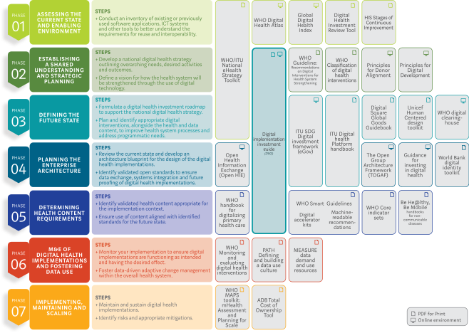

✎ edit📣 feedback Each chapter gives objectives, key messages, proposed sections with the main points to be covered, suggested figures and tables, tools and checklists, and the outputs that a country would be expected to produce. The content draws on published WHO guidance listed at the end of this document.
This is the working document of the handbook, seeded from the TWG manuscript outline of 2 October 2026. Working-group members comment on any block; comments are grouped into change sets, decided, and made on a branch with a preview of the result (see the repository README).
✎ edit📣 feedback Remark. One registry or one set of information?
The WHO 2015 minimum data set describes the registry as “the single authoritative source”, and the draft DPI-H reference architecture appears to describe it as a centralized system. This draft treats the registry as one trusted set of information that may sit in one system or several. The TWG should agree on the wording.
✎ edit📣 feedback Remark. Boundary with HRIS:
The draft treats human resource management functions as out of scope. The TWG should confirm where the line is drawn, since many countries run the registry inside an HRIS.
✎ edit📣 feedback Remark. Minimum data set:
The draft proposes updating the 2015 minimum data set within this handbook. The TWG should confirm whether the update belongs here or in a separate product.
✎ edit📣 feedback Remark. Unique health worker identification:
Should this topic have a dedicated chapter?
✎ edit📣 feedback Remark. Which health workers?
The draft assumes regulated professions first, extending to other occupations including community health workers and the private sector. The TWG should confirm the scope.
✎ edit📣 feedback Remark. Overlap between chapters:
Governance appears in three chapters (Governance and Stewardship, Interoperability, Data Quality and Governance). Requirements appear in three (User Personas and Use Cases, Functional Requirements, Business Process Redesign). Use cases appear in two (User Personas and Use Cases, Illustrative Use Cases). Consider merging or cross-referencing, and renaming “Data Quality and Governance” to “Data Quality”.
✎ edit📣 feedback Remark. Step-by-step or modular?
Part 3 is drafted as a pathway that countries can enter at different points, taking the parts they need. Is this the right framing.
✎ edit📣 feedback Remark. Case studies:
No countries have been selected yet. The TWG should nominate cases.
✎ edit📣 feedback Table.
| Part | Chapter | Sections |
|---|---|---|
| Part 0. Introduction | 1. Why Digital Health Workforce Registries Matter | Global challenges; Value proposition; Registry as digital public infrastructure; Benefits and outcomes |
| 2. Scope and Boundaries | Included topics; Excluded topics; Target audiences | |
| 3. Digital Transformation Approach | DIIG alignment; Transformation principles; Country pathway | |
| Part 1. Foundations | 4. Purpose and Role of a Registry | Definitions; Authoritative source; Health worker lifecycle; Strategic uses |
| 5. User Personas and Use Cases | Personas; Priority use cases; User stories; Requirements derivation | |
| 6. Governance and Stewardship | Institutions; Legal foundations; Data stewardship; Sustainability | |
| 7. Functional Requirements | Identity management; Records; Lifecycle management; Verification services; Analytics | |
| 8. Digital Architecture Principles | Architecture patterns; Federation; Scalability; Technology neutrality | |
| Part 2. Technical Design | 9. Registry within Ecosystem | System landscape; Data flows; Architecture examples |
| 10. Interoperability | Standards; APIs; Data exchange patterns; Governance | |
| 11. Data Standards and Minimum Dataset | Core dataset; Classifications; Metadata; NHWA mapping | |
| 12. Privacy, Security and Trust | Privacy by design; Cybersecurity; Access control; Audit trails | |
| 13. Data Quality Management | Quality dimensions; Validation; Monitoring | |
| Part 3. Country Implementation | 14. Preparing for Transformation | Leadership; Teams; Readiness; Stakeholder engagement |
| 15. Business Process Redesign | Current state mapping; Future workflows; Requirements | |
| 16. Planning and Procurement | Options analysis; Procurement approaches; Risk management | |
| 17. Implementation and Deployment | Migration; Testing; Rollout; Operations | |
| 18. Change Management | Communications; Adoption; Capacity strengthening | |
| 19. Monitoring and Continuous Improvement | KPIs; Maturity; Evaluation | |
| Part 4. Examples and Resources | 20. Illustrative Use Cases | Licensing; Verification; Emergency response; Mobility |
| 21. Country Case Studies | Centralized; Federated; Fragile settings; Lessons learned | |
| 22. Tools and Templates | Checklists; Roadmaps; Assessment tools | |
| Annexes | Minimum Data Set; Data Dictionary; Governance Template; User Personas; Functional Requirements Catalogue; Interoperability Models; Readiness Assessment; Maturity Model; Glossary; NHWA Mapping |
✎ edit📣 feedback Part 0. Introduction. This part explains why the handbook exists, what it covers and does not cover, who it is for, and the approach it takes: helping countries move from where they are today towards digital, interoperable health workforce registries built on shared digital building blocks.
✎ edit📣 feedback Chapter objectives. This chapter will help readers to:
✎ edit📣 feedback Key messages
✎ edit📣 feedback Suggested figures and tables
✎ edit📣 feedback Implementation tools and checklists
✎ edit📣 feedback Expected outputs for countries
✎ edit📣 feedback Chapter objectives. This chapter will help readers to:
✎ edit📣 feedback Key messages
✎ edit📣 feedback Suggested figures and tables
✎ edit📣 feedback Implementation tools and checklists
✎ edit📣 feedback Expected outputs for countries
✎ edit📣 feedback Chapter objectives. This chapter will help readers to:
✎ edit📣 feedback Key messages
✎ edit📣 feedback Figure.

Source: WHO Digital implementation investment guide (DIIG), 2020, Fig. 1.1.1. Reused from the smart-base library, adapted: the DIIG tile's label "(this document)" is replaced with "(DIIG)", since this handbook is not the DIIG.
✎ edit📣 feedback Table.
| DIIG chapter | What the DIIG step produces | Where this handbook covers it for registries |
|---|---|---|
| 2. Form the team and establish goals | Roles and responsibilities; a shared statement of needs and goals | Ch. 14 Preparing for transformation (14.1 Leadership, 14.2 Teams); Ch. 6 Governance and stewardship (6.1 Institutions); Ch. 2 Scope and boundaries |
| 3. Identify health system challenges and needs | A map of the current state; bottlenecks confirmed, prioritized and mapped to health system challenges | Ch. 1 Why registries matter (1.1 Global challenges); Ch. 4 Purpose and role (4.2 Authoritative source); Ch. 14.3 Readiness; Ch. 15.1 Current state mapping |
| 4. Determine appropriate digital health interventions | Selected interventions; enabling-environment assessment; functional requirements and user stories; a future-state workflow | Ch. 5 User personas and use cases; Ch. 7 Functional requirements; Ch. 15.2 Future workflows and 15.3 Requirements |
| 5. Plan the implementation | Infrastructure; legislation, policy and compliance; leadership and governance; workforce and training; services and applications | Ch. 6.2 Legal foundations; Ch. 12 Privacy, security and trust; Ch. 17 Implementation and deployment; Ch. 18 Change management (18.3 Capacity strengthening) |
| 6. Link to the enterprise architecture | Assessment of the architecture; common and enabling components; investment linked to both | Ch. 8 Digital architecture principles; Ch. 9 Registry within the ecosystem; Ch. 10 Interoperability; Ch. 11 Data standards and minimum data set |
| 7. Develop a budget | Phases of implementation; cost drivers; a budget matrix | Ch. 16 Planning and procurement (16.1 Options analysis and total cost of ownership); Ch. 6.4 Sustainability |
| 8. Monitor the implementation and use data effectively | A logic model; an M&E plan; a culture of data use; adaptive management | Ch. 13 Data quality management; Ch. 19 Monitoring and continuous improvement |
| 9. Value proposition and next steps | The case made to whoever pays | Ch. 1.2 Value proposition and 1.4 Benefits and outcomes (with the advocacy brief template) |
DIIG chapter 1 (Introduction) corresponds to Part 0 of this handbook. Part 4 (Chapters 20–22: illustrative use cases, country case studies, tools and templates) supports every step. In DIIG Fig. 1.1.1 above, the Guide itself spans phases 02–05; this handbook adds the registry-specific detail within that span.
Source for the DIIG chapters and their outputs: WHO, ITU and UN Foundation, Digital implementation investment guide (DIIG), 2020, as summarized in smart-base/methodologies/diig.md. The mapping is a proposal for the TWG.
✎ edit📣 feedback Suggested figures and tables
✎ edit📣 feedback Implementation tools and checklists
✎ edit📣 feedback Expected outputs for countries
✎ edit📣 feedback Part 1. Foundations. This part sets out the common understanding that health workforce and digital teams need before design starts: what a registry is and what it is for, who uses it, who governs it, what it must do, and the architecture principles it should follow.
✎ edit📣 feedback Chapter objectives. This chapter will help readers to:
✎ edit📣 feedback Key messages
✎ edit📣 feedback Suggested figures and tables
✎ edit📣 feedback Implementation tools and checklists
✎ edit📣 feedback Expected outputs for countries
✎ edit📣 feedback Chapter objectives. This chapter will help readers to:
✎ edit📣 feedback Key messages
✎ edit📣 feedback Persona. Health worker
Person. A person whose job is to protect and improve the health of their community: holds a registration, licence and employment record in the registry, and needs portable, verifiable credentials and simple renewals.
Specialises the SMART Guidelines generic persona: HealthcareProvider; CommunityHealthWorker.
| Draft for working-group review | Outline basis | |
|---|---|---|
| Goals | Portable, verifiable credentials; simpler renewals; recognition of training and continuing professional development; able to see and correct their own record. | 1.4, 6.3, 12.3 |
| Tasks | Apply for registration and licence; renew with CPD recorded; update employment or place of practice; view and correct own record; present a digital credential for verification online or offline. | 5.2, 7.3, 12.3, 20.1, 20.2 |
| Difficulties | Slow licensing; duplicate records across systems; administrative burden of re-entering the same data; concerns about how their data are used. | 1.1, 15 (key messages), 14.4, 18.1 |
| Digital skills | Varies. Paper or assisted channels are kept where digital skills are limited. To confirm with country input. | 15.2 |
| Connectivity | Varies, including low-connectivity settings; credentials must be verifiable offline. To confirm with country input. | 7 (key messages), 8.3, 20.2 |
✎ edit📣 feedback Persona. Registration officer (regulatory body)
Person. Staff of a professional council or regulatory body who registers and licenses practitioners, records status changes and answers verification requests.
| Draft for working-group review | Outline basis | |
|---|---|---|
| Goals | An accurate register that protects the public by confirming who is qualified and in good standing; faster, cheaper registration, renewal and verification. | 1.2, 4.4 |
| Tasks | Register and license practitioners; verify qualifications with training institutions; record status changes (suspended, lapsed, reinstated); answer verification requests, including from other countries; issue certificates of good standing. | 7.3, 7.4, 20.1, 20.4 |
| Difficulties | Records on paper or in stand-alone systems; duplicate records; concern about loss of control over their data and workload. | 1.1, 13.2, 14.4 |
| Digital skills | To confirm with country input. | — |
| Connectivity | To confirm with country input. | — |
✎ edit📣 feedback Persona. Employer or facility human resources manager
Person. Recruits, deploys and manages health workers for a public or private employer or facility; verifies credentials and records changes of employment and place of practice.
Specialises the SMART Guidelines generic persona: HealthSystemManager.
| Draft for working-group review | Outline basis | |
|---|---|---|
| Goals | Confidence that staff are qualified and authorized to practise; payroll that matches the real workforce. | 1.2, 1.4 |
| Tasks | Verify a health worker's status before and during employment; record changes of employment and place of practice; act on notices of suspension. | 5.2, 7.3, 20.1, 20.2 |
| Difficulties | Unverified credentials; duplicate and ghost records; data re-entered across HR and payroll systems. | 1.1, 9 (key messages) |
| Digital skills | To confirm with country input. | — |
| Connectivity | To confirm with country input. | — |
✎ edit📣 feedback Persona. Training institution registrar
Person. Records enrolment and graduation in a pre-service education institution and confirms qualifications to the regulator.
| Draft for working-group review | Outline basis | |
|---|---|---|
| Goals | Graduates registered without delay, with their qualifications recognized. | 1.4, 20.1 |
| Tasks | Record enrolment and graduation; confirm qualifications to the regulator as the primary source. | 4.3, 13.2, 20.1 |
| Difficulties | Education data held in systems not connected to the regulator's. | 1.1 |
| Digital skills | To confirm with country input. | — |
| Connectivity | To confirm with country input. | — |
✎ edit📣 feedback Persona. Workforce planner
Person. Uses stock, distribution, skill mix, attrition and migration data for planning and NHWA reporting.
Specialises the SMART Guidelines generic persona: HealthSystemManager; DataManager.
| Draft for working-group review | Outline basis | |
|---|---|---|
| Goals | Reliable numbers for planning, financing, emergency response and international reporting. | 1.4 |
| Tasks | Produce counts and distribution; analyse stock, distribution, skill mix, attrition and migration; prepare NHWA extracts; track inflows and outflows for reporting under the WHO Global Code of Practice. | 4.4, 5.2, 7.5, 11.4, 20.4 |
| Difficulties | Weak planning evidence and difficulty reporting to NHWA; incomplete coverage, especially of the private sector. | 1.1, 13.1 |
| Digital skills | To confirm with country input. | — |
| Connectivity | To confirm with country input. | — |
✎ edit📣 feedback Persona. Member of the public
Person. Checks that a practitioner is qualified and authorized to practise.
Specialises the SMART Guidelines generic persona: Person.
| Draft for working-group review | Outline basis | |
|---|---|---|
| Goals | Confidence that a practitioner is qualified and authorized to practise. | 1.4 |
| Tasks | Check a health worker's status online. | 20.2 |
| Difficulties | Sees only what is decided to be public (tiered disclosure). | 12.1 |
| Digital skills | To confirm with country input. | — |
| Connectivity | To confirm with country input. | — |
✎ edit📣 feedback Persona. Emergency coordinator
Person. Identifies, verifies and deploys qualified health workers, emergency medical teams and volunteers during an emergency.
| Draft for working-group review | Outline basis | |
|---|---|---|
| Goals | Rapid surge deployment of qualified health workers. | 20.3 |
| Tasks | Identify available, qualified workers by skill and location; verify credentials of emergency medical teams and volunteers; track deployment and return. | 20.3 |
| Difficulties | Unverified credentials; fragile or insecure settings. | 1.1, 21.3 |
| Digital skills | To confirm with country input. | — |
| Connectivity | May work in disrupted settings that need offline options. To confirm with country input. | 21.3 |
✎ edit📣 feedback Persona. Human resources information system (HRIS)
System. Manages employment transactions, payroll processing, leave and scheduling; supplies employment data to the registry and uses its identities.
| Draft for working-group review | Outline basis | |
|---|---|---|
| Purpose | Human resource management: recruitment, appraisal, leave and payroll processing (out of scope for the registry). | 2.2 |
| Exchanges with the registry | Supplies employment data to the registry and draws identities and credentials from it. | 4 (key messages), 9.1 |
| Issues | Many countries run the registry inside an HRIS; the boundary is a TWG point for discussion. | About this draft |
| Exchange pattern | Query on demand and notification of changes, or periodic batch. To confirm with country input. | 9.2, 10.3 |
✎ edit📣 feedback Persona. Payroll system
System. Pays health workers; reconciled against the registry to remove duplicate and ghost records.
| Draft for working-group review | Outline basis | |
|---|---|---|
| Purpose | Pays health workers. | 2.2, 9.1 |
| Exchanges with the registry | Reconciled against the registry to find duplicate and ghost records. | 1.2, 13.3 |
| Issues | Ghost records. | 1.1 |
| Exchange pattern | Periodic reconciliation. To confirm with country input. | 13.3 |
✎ edit📣 feedback Persona. Electronic medical record
System. Identifies and authorizes health workers at the point of care, for example a prescriber, by querying the registry.
Specialises the SMART Guidelines generic persona: System.EMR.
| Draft for working-group review | Outline basis | |
|---|---|---|
| Purpose | Clinical record at the point of care. | 9.1 |
| Exchanges with the registry | Identifies and authorizes health workers, for example checking that a prescriber is authorized. | 4.4, 20.2 |
| Issues | To confirm with country input. | — |
| Exchange pattern | Query on demand. | 10.2, 10.3 |
✎ edit📣 feedback Persona. Facility registry
System. The authoritative list of health facilities; the registry links each place of practice to it.
| Draft for working-group review | Outline basis | |
|---|---|---|
| Purpose | The authoritative list of health facilities. | 9.1 |
| Exchanges with the registry | Place of practice is linked to the facility registry. | 9 (key messages), 11.1 |
| Issues | To confirm with country input. | — |
| Exchange pattern | To confirm with country input. | — |
✎ edit📣 feedback Persona. National identity system
System. Foundational identity; the registry may link each health worker to a national identity number where available and lawful.
Specialises the SMART Guidelines generic persona: System.ClientRegistry.
| Draft for working-group review | Outline basis | |
|---|---|---|
| Purpose | Foundational identity and civil registration. | 9.1 |
| Exchanges with the registry | The health worker identifier is linked to the national identity number where available and lawful; identity is verified against it. | 7.1, 13.2 |
| Issues | Lawful basis for the link. | 6.2, 7.1 |
| Exchange pattern | To confirm with country input. | — |
✎ edit📣 feedback Persona. NHWA platform
System. The National Health Workforce Accounts data platform; receives indicator data derived from the registry.
Specialises the SMART Guidelines generic persona: System.HMIS.
| Draft for working-group review | Outline basis | |
|---|---|---|
| Purpose | National Health Workforce Accounts reporting. | 9.1 |
| Exchanges with the registry | Receives indicator extracts derived from registry data. | 7.5, 11.4 |
| Issues | Some indicators need other sources, such as finance data and labour force surveys. | 11.4 |
| Exchange pattern | Bulk exchange through periodic extracts. | 10.3 |
✎ edit📣 feedback User-scenario. Register and license a new graduate
A new graduate applies for registration; the qualification is verified with the training institution; the regulator registers and licenses the graduate; the registry record is created with a unique health worker identifier.
Personas: Health worker, Training institution registrar, Registration officer (regulatory body)
✎ edit📣 feedback User-scenario. Renew a licence
A health worker renews a time-limited licence, with continuing professional development recorded; the registry updates licence status and validity.
Personas: Health worker, Registration officer (regulatory body)
✎ edit📣 feedback User-scenario. Update employment or place of practice
An employer or the health worker records a change of employment or place of practice, linked to the facility registry.
Personas: Health worker, Employer or facility human resources manager, Human resources information system (HRIS), Facility registry
✎ edit📣 feedback User-scenario. Verify a health worker's status
An employer, a patient, another system or another country checks a health worker's registration and licence status.
Personas: Employer or facility human resources manager, Member of the public, Electronic medical record, Registration officer (regulatory body)
✎ edit📣 feedback User-scenario. Produce workforce counts and distribution for planning and NHWA reporting
Workforce counts and distribution are produced from the registry for national planning and for reporting to the National Health Workforce Accounts.
Personas: Workforce planner, NHWA platform
✎ edit📣 feedback Suggested figures and tables
✎ edit📣 feedback Implementation tools and checklists
✎ edit📣 feedback Expected outputs for countries
✎ edit📣 feedback Chapter objectives. This chapter will help readers to:
✎ edit📣 feedback Key messages
✎ edit📣 feedback Suggested figures and tables
✎ edit📣 feedback Implementation tools and checklists
✎ edit📣 feedback Expected outputs for countries
✎ edit📣 feedback Chapter objectives. This chapter will help readers to:
✎ edit📣 feedback Key messages
✎ edit📣 feedback Functional-requirement. Assign a unique, persistent health worker identifier, linked to the national…
FR-ID-01. Assign a unique, persistent health worker identifier, linked to the national identity number where available and lawful.
Priority: to be set (must / should / could). Linked use cases: to be traced.
✎ edit📣 feedback Functional-requirement. Search, match and merge duplicate records across source systems.
FR-ID-02. Search, match and merge duplicate records across source systems.
Priority: to be set (must / should / could). Linked use cases: to be traced.
✎ edit📣 feedback Functional-requirement. Manage changes of name and other identity details over a career.
FR-ID-03. Manage changes of name and other identity details over a career.
Priority: to be set (must / should / could). Linked use cases: to be traced.
✎ edit📣 feedback Functional-requirement. Create, view, update and archive the health worker record in line with the…
FR-REC-01. Create, view, update and archive the health worker record in line with the minimum data set.
Priority: to be set (must / should / could). Linked use cases: to be traced.
✎ edit📣 feedback Functional-requirement. Hold supporting evidence, such as certificates, or links to it.
FR-REC-02. Hold supporting evidence, such as certificates, or links to it.
Priority: to be set (must / should / could). Linked use cases: to be traced.
✎ edit📣 feedback Functional-requirement. Record the source and date of each data item.
FR-REC-03. Record the source and date of each data item.
Priority: to be set (must / should / could). Linked use cases: to be traced.
✎ edit📣 feedback Functional-requirement. Manage status changes: registered, licensed, suspended, lapsed, retired,…
FR-LC-01. Manage status changes: registered, licensed, suspended, lapsed, retired, deceased, emigrated.
Priority: to be set (must / should / could). Linked use cases: to be traced.
✎ edit📣 feedback Functional-requirement. Support renewals, recording of continuing professional development, and…
FR-LC-02. Support renewals, recording of continuing professional development, and reminders.
Priority: to be set (must / should / could). Linked use cases: to be traced.
✎ edit📣 feedback Functional-requirement. Record changes of employment and place of practice over time.
FR-LC-03. Record changes of employment and place of practice over time.
Priority: to be set (must / should / could). Linked use cases: to be traced.
✎ edit📣 feedback Functional-requirement. Confirm registration and licence status in real time for employers, the…
FR-VER-01. Confirm registration and licence status in real time for employers, the public and other systems.
Priority: to be set (must / should / could). Linked use cases: to be traced.
✎ edit📣 feedback Functional-requirement. Issue digital, verifiable credentials or certificates (for example a…
FR-VER-02. Issue digital, verifiable credentials or certificates (for example a certificate of good standing).
Priority: to be set (must / should / could). Linked use cases: to be traced.
✎ edit📣 feedback Functional-requirement. Respond to verification requests from other countries.
FR-VER-03. Respond to verification requests from other countries.
Priority: to be set (must / should / could). Linked use cases: to be traced.
✎ edit📣 feedback Functional-requirement. Standard reports and dashboards on stock, distribution, age, sex, occupation…
FR-AN-01. Standard reports and dashboards on stock, distribution, age, sex, occupation and status.
Priority: to be set (must / should / could). Linked use cases: to be traced.
✎ edit📣 feedback Functional-requirement. Data extracts for NHWA and national planning.
FR-AN-02. Data extracts for NHWA and national planning.
Priority: to be set (must / should / could). Linked use cases: to be traced.
✎ edit📣 feedback Functional-requirement. Data quality reports for registry managers.
FR-AN-03. Data quality reports for registry managers.
Priority: to be set (must / should / could). Linked use cases: to be traced.
✎ edit📣 feedback Non-functional requirements matter as much as functions. The initial set, from the chapter's key messages:
✎ edit📣 feedback Non-functional-requirement. Security
NFR-01 Security. Health workers' personal data are protected in storage and in transit, with role-based access for people and authenticated access for systems (see Chapter 12).
✎ edit📣 feedback Non-functional-requirement. Availability
NFR-02 Availability. Verification services are available when employers, the public and other systems need them, with agreed service levels.
✎ edit📣 feedback Non-functional-requirement. Offline and low-connectivity use
NFR-03 Offline and low-connectivity use. Registration and verification work in low-connectivity settings, including through paper or assisted channels where needed.
✎ edit📣 feedback Non-functional-requirement. Languages
NFR-04 Languages. The registry and its public views support the languages its users need.
✎ edit📣 feedback Non-functional-requirement. Testable requirements
NFR-05 Testable requirements. Every requirement is written so that conformance to it can be tested.
✎ edit📣 feedback Suggested figures and tables
✎ edit📣 feedback Implementation tools and checklists
✎ edit📣 feedback Expected outputs for countries
✎ edit📣 feedback Chapter objectives. This chapter will help readers to:
✎ edit📣 feedback Key messages
✎ edit📣 feedback Suggested figures and tables
✎ edit📣 feedback Implementation tools and checklists
✎ edit📣 feedback Expected outputs for countries
✎ edit📣 feedback Part 2. Technical Design. This part gives the technical guidance needed to design a registry that connects with the wider health and government digital ecosystem: where the registry sits, how it exchanges data, what data it holds, and how those data are kept secure and of good quality.
✎ edit📣 feedback Chapter objectives. This chapter will help readers to:
✎ edit📣 feedback Key messages
✎ edit📣 feedback Suggested figures and tables
✎ edit📣 feedback Implementation tools and checklists
✎ edit📣 feedback Expected outputs for countries
✎ edit📣 feedback Chapter objectives. This chapter will help readers to:
✎ edit📣 feedback Key messages
✎ edit📣 feedback Suggested figures and tables
✎ edit📣 feedback Implementation tools and checklists
✎ edit📣 feedback Expected outputs for countries
✎ edit📣 feedback Chapter objectives. This chapter will help readers to:
✎ edit📣 feedback Key messages
✎ edit📣 feedback Data-element. Identification number
Identification number — element 1 of the WHO 2015 minimum data set for a health workforce registry.
| Definition | Format | Mandatory | Source | Sensitivity | FHIR mapping |
|---|---|---|---|---|---|
| to draft | to draft | to draft | to draft | to draft | to draft |
✎ edit📣 feedback Data-element. Name
Name — element 2 of the WHO 2015 minimum data set for a health workforce registry.
| Definition | Format | Mandatory | Source | Sensitivity | FHIR mapping |
|---|---|---|---|---|---|
| to draft | to draft | to draft | to draft | to draft | to draft |
✎ edit📣 feedback Data-element. Birth history
Birth history — element 3 of the WHO 2015 minimum data set for a health workforce registry.
| Definition | Format | Mandatory | Source | Sensitivity | FHIR mapping |
|---|---|---|---|---|---|
| to draft | to draft | to draft | to draft | to draft | to draft |
✎ edit📣 feedback Data-element. Citizenship and language
Citizenship and language — element 4 of the WHO 2015 minimum data set for a health workforce registry.
| Definition | Format | Mandatory | Source | Sensitivity | FHIR mapping |
|---|---|---|---|---|---|
| to draft | to draft | to draft | to draft | to draft | to draft |
✎ edit📣 feedback Data-element. Address
Address — element 5 of the WHO 2015 minimum data set for a health workforce registry.
| Definition | Format | Mandatory | Source | Sensitivity | FHIR mapping |
|---|---|---|---|---|---|
| to draft | to draft | to draft | to draft | to draft | to draft |
✎ edit📣 feedback Data-element. Contact information
Contact information — element 6 of the WHO 2015 minimum data set for a health workforce registry.
| Definition | Format | Mandatory | Source | Sensitivity | FHIR mapping |
|---|---|---|---|---|---|
| to draft | to draft | to draft | to draft | to draft | to draft |
✎ edit📣 feedback Data-element. Professional licence and certification
Professional licence and certification — element 7 of the WHO 2015 minimum data set for a health workforce registry.
| Definition | Format | Mandatory | Source | Sensitivity | FHIR mapping |
|---|---|---|---|---|---|
| to draft | to draft | to draft | to draft | to draft | to draft |
✎ edit📣 feedback Data-element. Employment status
Employment status — element 8 of the WHO 2015 minimum data set for a health workforce registry.
| Definition | Format | Mandatory | Source | Sensitivity | FHIR mapping |
|---|---|---|---|---|---|
| to draft | to draft | to draft | to draft | to draft | to draft |
✎ edit📣 feedback Data-element. Employment address
Employment address — element 9 of the WHO 2015 minimum data set for a health workforce registry.
| Definition | Format | Mandatory | Source | Sensitivity | FHIR mapping |
|---|---|---|---|---|---|
| to draft | to draft | to draft | to draft | to draft | to draft |
✎ edit📣 feedback Data-element. Data submission institution
Data submission institution — element 10 of the WHO 2015 minimum data set for a health workforce registry.
| Definition | Format | Mandatory | Source | Sensitivity | FHIR mapping |
|---|---|---|---|---|---|
| to draft | to draft | to draft | to draft | to draft | to draft |
✎ edit📣 feedback Suggested figures and tables
✎ edit📣 feedback Implementation tools and checklists
✎ edit📣 feedback Expected outputs for countries
✎ edit📣 feedback Chapter objectives. This chapter will help readers to:
✎ edit📣 feedback Key messages
✎ edit📣 feedback Suggested figures and tables
✎ edit📣 feedback Implementation tools and checklists
✎ edit📣 feedback Expected outputs for countries
✎ edit📣 feedback Chapter objectives. This chapter will help readers to:
✎ edit📣 feedback Key messages
✎ edit📣 feedback Suggested figures and tables
✎ edit📣 feedback Implementation tools and checklists
✎ edit📣 feedback Expected outputs for countries
✎ edit📣 feedback Part 3. Country Implementation. This part guides countries through the practical steps of transformation, from preparing and assessing readiness to operating and improving the registry. Countries can enter at the step that matches their situation.
✎ edit📣 feedback Chapter objectives. This chapter will help readers to:
✎ edit📣 feedback Key messages
✎ edit📣 feedback Suggested figures and tables
✎ edit📣 feedback Implementation tools and checklists
✎ edit📣 feedback Expected outputs for countries
✎ edit📣 feedback Chapter objectives. This chapter will help readers to:
✎ edit📣 feedback Key messages
✎ edit📣 feedback Suggested figures and tables
✎ edit📣 feedback Implementation tools and checklists
✎ edit📣 feedback Expected outputs for countries
✎ edit📣 feedback Chapter objectives. This chapter will help readers to:
✎ edit📣 feedback Key messages
✎ edit📣 feedback Suggested figures and tables
✎ edit📣 feedback Implementation tools and checklists
✎ edit📣 feedback Expected outputs for countries
✎ edit📣 feedback Chapter objectives. This chapter will help readers to:
✎ edit📣 feedback Key messages
✎ edit📣 feedback Suggested figures and tables
✎ edit📣 feedback Implementation tools and checklists
✎ edit📣 feedback Expected outputs for countries
✎ edit📣 feedback Chapter objectives. This chapter will help readers to:
✎ edit📣 feedback Key messages
✎ edit📣 feedback Suggested figures and tables
✎ edit📣 feedback Implementation tools and checklists
✎ edit📣 feedback Expected outputs for countries
✎ edit📣 feedback Chapter objectives. This chapter will help readers to:
✎ edit📣 feedback Key messages
✎ edit📣 feedback Suggested figures and tables
✎ edit📣 feedback Implementation tools and checklists
✎ edit📣 feedback Expected outputs for countries
✎ edit📣 feedback Part 4. Examples and Resources. This part illustrates the guidance with worked use cases and country experience, and provides practical tools and templates that countries can adapt.
✎ edit📣 feedback Chapter objectives. This chapter will help readers to:
✎ edit📣 feedback Key messages
✎ edit📣 feedback User-scenario. Licensing
Personas: Health worker, Training institution registrar, Registration officer (regulatory body), Employer or facility human resources manager
✎ edit📣 feedback User-scenario. Verification
Personas: Employer or facility human resources manager, Member of the public, Electronic medical record, Health worker
✎ edit📣 feedback User-scenario. Emergency response
Personas: Emergency coordinator, Health worker, Registration officer (regulatory body)
✎ edit📣 feedback User-scenario. Mobility
Personas: Health worker, Registration officer (regulatory body), Workforce planner
✎ edit📣 feedback Suggested figures and tables
✎ edit📣 feedback Implementation tools and checklists
✎ edit📣 feedback Expected outputs for countries
✎ edit📣 feedback Chapter objectives. This chapter will help readers to:
✎ edit📣 feedback Key messages
✎ edit📣 feedback Suggested figures and tables
✎ edit📣 feedback Implementation tools and checklists
✎ edit📣 feedback Expected outputs for countries
✎ edit📣 feedback Chapter objectives. This chapter will help readers to:
✎ edit📣 feedback Key messages
✎ edit📣 feedback Suggested figures and tables
✎ edit📣 feedback Implementation tools and checklists
✎ edit📣 feedback Expected outputs for countries
✎ edit📣 feedback The annexes hold the full versions of the tools, templates and reference material the chapters point to. Annex 9 (Glossary) is its own chapter.
✎ edit📣 feedback Proposed core and optional data elements with definitions. An update of the WHO 2015 minimum data set.
The 2015 elements are drafted as structured data-element blocks in section 11.1.
✎ edit📣 feedback For each data element: definition, data type, permitted values, source, and mapping to FHIR.
✎ edit📣 feedback Model terms of reference for the steering committee and technical working group, a responsibility matrix, and a sample data-sharing agreement.
✎ edit📣 feedback Full generic persona descriptions for countries to adapt.
The generic personas are drafted as structured persona blocks in section 5.1.
✎ edit📣 feedback Numbered functional and non-functional requirements, each with a priority and linked use case.
The functional and non-functional requirements are drafted as structured requirement blocks in Chapter 7.
✎ edit📣 feedback Reference data flows, standard interfaces and example exchanges for centralized, federated and hybrid models.
✎ edit📣 feedback Questionnaire and scoring guide for each assessment area.
✎ edit📣 feedback Levels and criteria for each area, with a self-assessment form.
✎ edit📣 feedback Table linking registry data elements to NHWA indicators.
✎ edit📣 feedback About this glossary.
This glossary covers health workforce terms. Digital terms are addressed separately.
The working group's task is to agree a definition for each term, staying consistent with existing WHO publications unless there is a reason to update one. The priority terms are health workforce registry, human resources for health information system and professional council. The registry definition must match the final definition in the DPI-H reference architecture.
Each entry below lists the candidate definitions proposed in the TWG glossary workbook (29 September 2026), each with its source. Comment on the entry: say which candidate you prefer, or propose an edited or new definition. Some definitions and sources in the workbook were generated with AI and may need correction.
The machine-readable form is in glossary/ (SKOS concept schemes). This chapter is generated from it by scripts/glossary/build_glossary.py; edit the glossary, not this chapter.
✎ edit📣 feedback Health workforce registry.
Also: Health worker registry, Provider registry.
Status: open. 12 candidate definitions, none adopted.
Candidate 1 (WHO/ITU. DPI-H reference architecture, draft v1.0 for public comment. July 2026):
The Health Workforce Registry is the national authoritative record of identity, credential, and classification data for all health workers recognised as part of the national health workforce — including licensed or certified professionals employed in both public and private sectors and, where nationally defined and registered, community health workers and other cadres operating in informal or semi-formal capacities. It maintains a standardised, uniquely identified record for each health worker, providing the common reference point against which clinical, administrative, financing, and regulatory systems can consistently identify, verify, and classify the people delivering health services.
Candidate 2 (WHO/ITU. DPI-H reference architecture, draft v1.0 for public comment. July 2026):
The Health Workforce Registry is the national authoritative record of identity, credential, and classification data for all health workers recognised as part of the national health workforce — including licensed or certified professionals employed in both public and private sectors and, where nationally defined and registered, community health workers and other cadres operating in informal or semi-formal capacities. It maintains a standardised, uniquely identified record for each health worker, providing the common reference point against which clinical, administrative, financing, and regulatory systems can consistently identify, verify, and classify the people delivering health services.
The registry holds two interlocking categories of information: 1. The first is identity: who the health worker is — their demographics, unique identifier, and may cross-reference to foundational identification systems. 2. The second is credentials: what the health worker is qualified and authorised to do — their 240 occupational classification, professional registration, licensing status, and qualifications.
Together, these form the data foundation for a health system that can assure the quality and accountability of its workforce at scale.
The WHO National Health Workforce Accounts (NHWA) handbook (Second Edition, 2023) defines 29 244 indicators that underpin health workforce monitoring, planning, and policy — covering stock, flow, education, migration, and expenditure. The national health workforce registry is a key data source for 12 of 246 these indicators, notably those measuring stock and flow – critical to workforce planning and equitable distribution. The Health Workforce Registry, as defined in the DPI-H reference architecture, provides the foundational data infrastructure from which these indicators can be derived.
Architecture placement: The Health Workforce Registry is a core DPI-H foundational component — the shared identity and credential anchor for health workers across the health ecosystem. It is architecturally distinct from two operational systems: the Human Resources Information System (HRIS), which manages employment transactions, payroll processing, leave management, and workforce scheduling; and the Learning Management System (LMS), which manages training delivery, course enrolment, and assessment. The Health Workforce Registry holds the authoritative master record of who a health worker is and what they are qualified and licensed to do. The HRIS and LMS consume this registry as their reference source; neither replaces it.
Candidate 3 (WHO. HRH information system: minimum data set for health workforce registry. 2015):
"In a national context an electronic health workforce registry can be considered the single authoritative source of health workforce information that can provide an accurate count of all health care personnel that either have worked or are currently working at national or sub-national levels, including in the private sector. An electronic health workforce registry can be designed to authenticate and validate the existence of a health worker and provide essential details about that person." (p. 7) The health workforce registry is a central and essential component of a functional HRIS, as it contains important health worker attributes that can subsequently be linked to other relevant HRIS components." (p8)
"In this document, a minimum data set is proposed to construct an electronic health workforce registry. Using this tool, data elements can be standardized within electronic systems to help facilitate the collection, collation, analysis, reporting and utilization of national and sub-national health workforce data. The tool can also assist in achieving data interoperability between and within information systems."(p8)
Candidate 4 (WHO. Health practitioner regulation: design, reform and implementation guidance. 2024):
“Regulators generally maintain a registry of regulated practitioners to keep the public informed of those authorized as competent to practice and those who have been suspended or removed from the registry. The level of detail available about practitioners through the regulator’s public website varies between regulators, occupations and countries, from a simple verification of registration to details on qualification, and practice and disciplinary history. Different types of registration exist (for example, student, temporary, provisional, limited practice, supervised practice, private practice, public sector practice, independent practice, specialized practice and nonclinical practice). These determine where a health practitioner can work, their scope of work and level of independence. While in some countries periodic renewals are required to maintain a practitioner’s registration or licence, in others, regulators have limited capacity to maintain a complete registry (p11)
Based on data available from regulators, the registries of regulated health practitioners may include information on the number of students in health occupations, active and inactive health practitioners, their personal details, place of education and employment, and the jurisdiction of registration within a country. (p13)
The inclusion of disciplinary history in public registries can help patients, clients and employers to make informed choices about practitioners. Regulators can use the data to identify and reduce the risk of harm to the public through preventative action or early identification and intervention (p45)
A core function of regulators is to maintain a publicly available registry on regulated health practitioners that is accurate, complete and includes information on practitioners who have been removed from the registry. This enables access to information on practitioners by both the public seeking services and employers recruiting the practitioners. Depending on the occupation and jurisdiction, the information in the public registry can vary. The health practitioner registry accessible to the public is in compliance with legislation and requirements on confidentiality and the handling of personal data and generally includes relevant information on the practitioners such as name, gender, age, registration number, qualification details (such as basic and additional qualifications, conferring institution, year conferred), scope of registration or licensure, disciplinary history and associated sanctions and actions (26, 115, 286–288). Since maintaining an up-to-date public registry has resource implications, the costs and benefits should be assessed for each data point included in the register. Information shared in the public registry is only a subset of the information that is collected by the regulators. Additional information captured by regulators could include practitioner characteristics such as language skills, country of birth, nationality, details on practice location, criminal history records, fitness to practice, and complaints and disciplinary actions. Information on employers may also be captured (26, 289–292). Some of the information held by regulators is confidential and the grounds on which this information may be shared and with whom need to be specified by law. Similarly, the regulator for health practitioner education could hold information on the capacity of the institutions as well as annual data on enrolments and graduates (if applicable) in different programmes, including gender, age, country of birth and the nationality of students. Where assessments of practitioner performance standards are regular and linked to periodic registration or licensure renewals, it can help to keep the practitioner registry updated. In such cases, the available data (for example, on education, entry to practice, maintenance of standards, complaints and discipline) should be analysed to detect clinical governance failures that harm patients, identify innovations and generate evidence and data for improving regulatory systems, practice environments, service delivery and patient safety (p46)
Candidate 5 (WHO. Strengthening the collection, analysis and use of health workforce data and information. 2022):
“Professional registries maintained by regulators: Regulators maintain a registry of health workers who have been authorized to enter into practice. The information on the registry varies between countries and regulators. In some countries the registration or licensure of health workers is time-limited and requires periodic renewals while in others it can be valid for life.”
Candidate 6 (Joachim M et al. Aligning health workforce forecasting and planning with changing care models):
“Interoperable health professional registers with a clear legal basis underpin workforce intelligence. Effective registers that integrate data from education, licensing and employment systems are essential if countries are to forecast better at the national and regional levels.” (p5)
"A health professional register is an official, usually mandatory, system that records information on individuals who are authorized to practise a regulated health profession. Registers are typically maintained by professional regulators or public authorities and contain data such as professional qualifications, scope of practice, licensing status and, depending on the system, information on employment, sector, working hours and location." (p. 23)
"Their primary purpose is to support professional regulation and patient safety, but they can also serve as a critical source of workforce intelligence. Health professional registers represent a critical source of high-quality, routinely updated workforce intelligence. They provide a robust empirical foundation for understanding the size, composition, distribution, and activity patterns of the HCWF and can inform a wide range of policy functions, including workforce forecasting and planning, education and training capacity, regulation, distribution and budgeting." p23.
Candidate 7 (Leitner C et al. Health worker information systems in low resource settings (IntraHealth, 2013)):
"...a Provider Registry (PR), also called a Healthcare Provider Directory (HPD), which “supports queries against, and management of, healthcare provider information that may be publicly shared in a directory structure.” The scope of the data is national and cross-sectoral but limited to rudimentary provider information. The PR, as part of a Service Oriented Architecture (SOA), is intended to be the canonical source of health worker data for a country. Within the HWIS, it has the potential to serve as the interface mechanism for the various components highlighted in Section 2."
Candidate 8 (OpenHIE Health Worker Registry implementation guide (IntraHealth/CapacityPlus, 2016)):
Glossary: "Health Worker Registry: a national authority of health worker information according to a defined minimum data set." "Provider Registry: Another synonym for Health Worker Registry." "Health Worker Directory: List of health workers that are managed by individual organizations, which can come together to form a health worker registry."
Narrative definition: "A Health Worker Registry (HWR) serves as the digital, central authority for maintaining the unique virtual identities of health workers within a country. . The Health Worker Registry pulls data from underlying human resource information systems (HRIS), which play the role of Health Worker Directories, and makes these data available as a single virtual database. These Health Worker Directories could include Ministry of Health installations of tools like iHRIS, private systems used by faith-based organizations, and private-sector systems as well as those used by regulatory bodies like nursing councils. These health Worker directories are responsible for specific business processes: maybe one tracks health worker certifications for a professional council or another holds salary information for the ministry of health. The information stored in these directories mirrors their business cases. The Health Worker Registry has no business case other than being a master document of all health worker information that specific directories can pull and share. The Health Worker Registry contains a Minimum Data Set (MDS) of details of all health workers working in both public and private sectors, such as full name, contact information and place(s) of employment.
The Health Worker Registry (HWR) serves as the authority for maintaining the unique identities of health workers within a country (p12)
Governments collect and store multiple and disparate sources of data on health workers. Thus, it is a complex task to pull together and maintain a master list of all health workers in a country. A Health Worker Registry (HWR) seeks to reduce the complexity of this task by: ● creating a Minimum Data Set (MDS) of health workforce information from the various source data systems ● merging the information from a variety of data systems into an authoritative registry of health workers according to a data governance policy ● allowing queries of health worker information by various computer and human users, also called the client systems.
The HWR serves as a publicly available “electronic phone-book” of health workers and health services across all sectors (public, private and faith-based organizations). As the World Health Organization points out, the HWR can be seen as the “single authoritative source” of health workforce information that parts of the HIS can query to obtain details on health workers and automatically populate their databases, rather than having to manually enter those details themselves.
Candidate 9 (IntraHealth Tech Tuesday: health worker registries, MDS and NHWA (2015)):
"searchable directory of minimal set of health worker information" "no intrinsic management function" "designed to fit in as part of larger health information system." Health Worker Registry Combines Data Sources: pulling together Deployment, License, and Training data from separate source systems.
Candidate 10 (Chibuzor M et al. Implementation of health workforce information systems: eight sub-Saharan countries):
"HWR or HRH registry is a 'single authoritative source of health workforce information, that can provide an accurate count of all health care personnel that either has worked or are currently working at national or sub-national levels, including in the private sector'" (World Health Organization. Monitoring the building blocks of health systems: a handbook of indicators and their measurement strategies.)
"The HWR does not function in isolation. It is a part of the Human Resource Information System (HRIS) (also called health workforce information system). HRIS is a system that collects, maintains and analyses data on the health workforce. Other components of HRIS are payroll, training, performance management,migration, benefits and retirement components (Fig. 1). The HWR is, however, a central component of the HRIS and provides data on which all the other components depend.
Candidate 11 (Digital Health Enterprise Planning Approach, training slide deck (undated)):
"A health worker registry is the central authority for maintaining the unique identities of health providers within the country"
Candidate 12 (WHO Minimum Data Set (MDS) crosswalk (undated)):
"A health worker registry is a centralized listing of health workers within a country. Information contained within a health worker registry most often comes from different health management information systems (HMIS), such as iHRIS, used, for example, by independent organizations, health clinics run by non-state actors or regulatory bodies. These client systems are often organized around specific workflows revolving around human resources (hiring a new health worker, providing a salary bonus, transferring a health worker to a new location), but the health worker registry may contain only specific information about health workers."
✎ edit📣 feedback Table.
| # | Source | Year | Opening sentence |
|---|---|---|---|
| 1 | WHO/ITU. DPI-H reference architecture, draft v1.0 for public comment. July 2026 | 2026 | The Health Workforce Registry is the national authoritative record of identity, credential, and classification data for all health workers recognised as part of the national health workforce — including licensed or… |
| 2 | WHO/ITU. DPI-H reference architecture, draft v1.0 for public comment. July 2026 | 2026 | The Health Workforce Registry is the national authoritative record of identity, credential, and classification data for all health workers recognised as part of the national health workforce — including licensed or… |
| 3 | WHO. HRH information system: minimum data set for health workforce registry. 2015 | 2015 | In a national context an electronic health workforce registry can be considered the single authoritative source of health workforce information that can provide an accurate count of all health care personnel that… |
| 4 | WHO. Health practitioner regulation: design, reform and implementation guidance. 2024 | 2024 | Regulators generally maintain a registry of regulated practitioners to keep the public informed of those authorized as competent to practice and those who have been suspended or removed from the registry. |
| 5 | WHO. Strengthening the collection, analysis and use of health workforce data and information. 2022 | 2022 | Professional registries maintained by regulators: Regulators maintain a registry of health workers who have been authorized to enter into practice. |
| 6 | Joachim M et al. Aligning health workforce forecasting and planning with changing care models | — | Interoperable health professional registers with a clear legal basis underpin workforce intelligence. |
| 7 | Leitner C et al. Health worker information systems in low resource settings (IntraHealth, 2013) | 2013 | ...a Provider Registry (PR), also called a Healthcare Provider Directory (HPD), which “supports queries against, and management of, healthcare provider information that may be publicly shared in a directory structure.”… |
| 8 | OpenHIE Health Worker Registry implementation guide (IntraHealth/CapacityPlus, 2016) | 2016 | Glossary: "Health Worker Registry: a national authority of health worker information according to a defined minimum data set." "Provider Registry: Another synonym for Health Worker Registry." "Health Worker Directory:… |
| 9 | IntraHealth Tech Tuesday: health worker registries, MDS and NHWA (2015) | 2015 | searchable directory of minimal set of health worker information" "no intrinsic management function" "designed to fit in as part of larger health information system." Health Worker Registry Combines Data Sources:… |
| 10 | Chibuzor M et al. Implementation of health workforce information systems: eight sub-Saharan countries | — | HWR or HRH registry is a 'single authoritative source of health workforce information, that can provide an accurate count of all health care personnel that either has worked or are currently working at national or… |
| 11 | Digital Health Enterprise Planning Approach, training slide deck (undated) | — | A health worker registry is the central authority for maintaining the unique identities of health providers within the country" |
| 12 | WHO Minimum Data Set (MDS) crosswalk (undated) | — | A health worker registry is a centralized listing of health workers within a country. |
✎ edit📣 feedback Human resources for health information system.
Also: HRH-IS, Health workforce information system, human resources information systems for health, HRIS, HRHIS, Information Systems for Human Resources for Health (ISHRH).
Status: open. 12 candidate definitions, none adopted.
Candidate 1 (WHO. Health labour market analysis guidebook. 2021):
An information system that provides, analyses, evaluates and distributes information needed to support decision-making and health personnel management and practices.
Candidate 2 (WHO. Health labour market analysis guidebook. 2021):
HRH-IS: An information system that provides, analyses, evaluates and distributes information needed to support decision-making and health personnel management and practices. P280
Candidate 3 (WHO. Strengthening the collection, analysis and use of health workforce data and information. 2022):
A human resources for health information system (HRHIS) is the basic tool that can provide data and information on the health workforce situation and its evolution.” p267; An HRHIS enables the monitoring of key information on HRH, such as stock and demography, education, finances, regulations, etc. It is an integrated element of the broader HIS, not an isolated subsystem."Page: 310
Candidate 4 (Eurohealth. The European health workforce: building a true labour market. 2022):
“An HRHIS is a subsystem of an HIS, composed of various subsystems such as the payroll information system, education management information system (EMIS), and councils’ and professional associations’ records and information systems.” p261
Candidate 5 (Riley PL et al. Information systems on human resources for health: a global review. 2012):
"Increasingly, systems for collecting and disseminating information on a country’s health workforce – referred to as human resources information systems (HRIS)... Functional HRIS models involve standardized processes for data capture, management, and use so as to provide accurate, timely, and comprehensive profiles of workforce size, composition, and deployment"
Candidate 6 (Leitner C et al. Health worker information systems in low resource settings (IntraHealth, 2013)):
"A Human Resource Information System (HRIS)... is one [of] the key components of the HWIS that manages information on current and past employees of a Ministry of Health or other health service delivery organization. An HRIS is concerned with the information related to position/post, job, cadre and other information related to employee management and deployment"
Candidate 7 (Ishijima H et al. HRHIS and TIIS national rollout in Tanzania):
Describes Tanzania’s "Human Resource for Health Information System (HRHIS)": "HRHIS is a web-based software that enables a health system to collect, validate, analyse and present raw and statistical human resource information for reporting, analysis and decision-making"
Candidate 8 (Were V et al. South-South collaboration on HRIS):
HRIS collects and manages routine, national level, multi-cadre data on the health workforce including supply (i.e., training, exam, registration, licensure, intent to out-migrate, and continuing professional development) and deployment (i.e., health facility of deployment, date of appointment, workstation in the facility, date of promotion, disciplinary actions, date of exit, and transfers)."
Candidate 9 (Chibuzor M et al. Implementation of health workforce information systems: eight sub-Saharan countries):
"HRIS is a system that collects, maintains and analyses data on the health workforce. Other components of HRIS are payroll, training, performance management, migration, benefits and retirement components" (p.i28, Fig.1). Data collected covers "the health worker from pre-entry into the workforce to exit at retirement" including "identification number, name, birth history, employment status, address, education, professional licensure and certification" (p.i28).
Candidate 10 (MEASURE Evaluation, Module 3. 2018):
"A human resources information system (HRIS) provides data to track the status of the workforce in terms of the number, occupation, and geographical distribution of health workers."
Candidate 11 (Waters KP et al. Zimbabwe's HRH information system (ZHRIS)):
"A human resources information system (HRIS) is a system of collection, storage, analysis, and reporting of data to produce meaningful information about the health workforce, including demographics, capacity, training needs, deployment, and migration patterns."
Candidate 12 (Wikipedia: HRHIS):
A human resource for health information system (HRHIS), also known as human resource information system (HRIS) — is a system for collecting, processing, managing and disseminating data and information on human resource for health (HRH). Depending on the level of development of a country's health care system and the organization of its workforce, an HRHIS can be computerized or paper-based, including information on numbers and distribution of health workers and track their career information.[1]
✎ edit📣 feedback Table.
| # | Source | Year | Opening sentence |
|---|---|---|---|
| 1 | WHO. Health labour market analysis guidebook. 2021 | 2021 | An information system that provides, analyses, evaluates and distributes information needed to support decision-making and health personnel management and practices. |
| 2 | WHO. Health labour market analysis guidebook. 2021 | 2021 | HRH-IS: An information system that provides, analyses, evaluates and distributes information needed to support decision-making and health personnel management and practices. |
| 3 | WHO. Strengthening the collection, analysis and use of health workforce data and information. 2022 | 2022 | A human resources for health information system (HRHIS) is the basic tool that can provide data and information on the health workforce situation and its evolution.” p267; |
| 4 | Eurohealth. The European health workforce: building a true labour market. 2022 | 2022 | An HRHIS is a subsystem of an HIS, composed of various subsystems such as the payroll information system, education management information system (EMIS), and councils’ and professional associations’ records and… |
| 5 | Riley PL et al. Information systems on human resources for health: a global review. 2012 | 2012 | Increasingly, systems for collecting and disseminating information on a country’s health workforce – referred to as human resources information systems (HRIS)... |
| 6 | Leitner C et al. Health worker information systems in low resource settings (IntraHealth, 2013) | 2013 | A Human Resource Information System (HRIS)... |
| 7 | Ishijima H et al. HRHIS and TIIS national rollout in Tanzania | — | Describes Tanzania’s "Human Resource for Health Information System (HRHIS)": "HRHIS is a web-based software that enables a health system to collect, validate, analyse and present raw and statistical human resource… |
| 8 | Were V et al. South-South collaboration on HRIS | — | HRIS collects and manages routine, national level, multi-cadre data on the health workforce including supply (i.e., training, exam, registration, licensure, intent to out-migrate, and continuing professional… |
| 9 | Chibuzor M et al. Implementation of health workforce information systems: eight sub-Saharan countries | — | HRIS is a system that collects, maintains and analyses data on the health workforce. |
| 10 | MEASURE Evaluation, Module 3. 2018 | 2018 | A human resources information system (HRIS) provides data to track the status of the workforce in terms of the number, occupation, and geographical distribution of health workers." |
| 11 | Waters KP et al. Zimbabwe's HRH information system (ZHRIS) | — | A human resources information system (HRIS) is a system of collection, storage, analysis, and reporting of data to produce meaningful information about the health workforce, including demographics, capacity, training… |
| 12 | Wikipedia: HRHIS | — | A human resource for health information system (HRHIS), also known as human resource information system (HRIS) — is a system for collecting, processing, managing and disseminating data and information on human resource… |
✎ edit📣 feedback Professional council.
Also: professional regulatory/licensing authority/body, medical council/board, nursing council/board.
Status: open. 2 candidate definitions, none adopted.
Candidate 1 (WHO. Health labour market analysis guidebook. 2021):
Organization with the legal authority to regulate one or more health occupations with a view to protecting the public. Its mandate can cover the regulation of entry into the occupation (education requirements), the monitoring and promotion of the quality of practice, and administration of discipline... At national level (and at subnational level where legislative power exists), examples of mandatory rules are professional laws that define the powers and duties of professional councils, such as registration, certification of specialties and discipline. They also define scopes of practice that, in turn, shape the division of labour in the HLM.
Candidate 2 (OpenHIE Health Worker Registry implementation guide (IntraHealth/CapacityPlus, 2016)):
A national, legislatively mandated entity that certifies one or more cadres of health workers as meeting predetermined professional requirements and standards of practice.
Country examples are listed in the section Professional councils: country examples.
✎ edit📣 feedback Table.
| # | Source | Year | Opening sentence |
|---|---|---|---|
| 1 | WHO. Health labour market analysis guidebook. 2021 | 2021 | Organization with the legal authority to regulate one or more health occupations with a view to protecting the public. |
| 2 | OpenHIE Health Worker Registry implementation guide (IntraHealth/CapacityPlus, 2016) | 2016 | A national, legislatively mandated entity that certifies one or more cadres of health workers as meeting predetermined professional requirements and standards of practice. |
✎ edit📣 feedback Accreditation.
Term: Accreditation.
Status: open. 1 candidate definition, none adopted.
Candidate 1 (WHO. Health practitioner regulation: design, reform and implementation guidance. 2024):
In a health workforce context, the evaluation of educational institutions and programmes of study against pre-defined standards required for the delivery of education. The outcome of the process is certification of the suitability of education programmes, and the capability of educational institutions to deliver initial and/or continuing education.
✎ edit📣 feedback Active health worker.
Term: Active health worker.
Status: open. 1 candidate definition, none adopted.
Candidate 1 (WHO. National health workforce accounts: a handbook, 2nd ed. 2023):
One who provides services to patients and communities (practising health worker) or whose medical education is a prerequisite for the execution of the job (e.g. education, research, public administration) even if the health worker is not directly providing services (professionally active health worker). If data are not available for practising or professionally active health workers, data with the closest definition can be used, such as “health worker licensed to practice”. Categories of level are based on the definitions of OECD/Eurostat/WHO-Europe Joint questionnaire on nonmonetary health care statistics.
✎ edit📣 feedback Activity level.
Term: Activity level.
Status: open. 1 candidate definition, none adopted.
Candidate 1 (WHO. National health workforce accounts: a handbook, 2nd ed. 2023):
• Practising: This includes all health and care personnel directly providing services to or for patients and communities. • Professionally active: This includes practising health and care personnel as well as other personnel who are directly not providing services to patients but for whom their medical or paramedical education is a prerequisite for the execution of the job (e.g. education, research, public administration). • Licensed to practice: This includes all health and care personnel who are registered and entitled to practice.
✎ edit📣 feedback Attrition.
Term: Attrition.
Status: open. 1 candidate definition, none adopted.
Candidate 1 (WHO. Health labour market analysis guidebook. 2021):
Defined broadly as exits from the workforce, which can be due to emigration, voluntary exits (for example, to other sectors of employment), illness, death or retirement
✎ edit📣 feedback Certification.
Term: Certification.
Status: open. 1 candidate definition, none adopted.
Candidate 1 (WHO. Health labour market analysis guidebook. 2021):
The recognition that an individual has met certain qualification requirements.
✎ edit📣 feedback Community health workers.
Term: Community health workers.
Status: open. 1 candidate definition, none adopted.
Candidate 1 (WHO. National health workforce accounts: a handbook, 2nd ed. 2023):
Health workers who provide health education, referral and follow-up, case management, basic preventive health care and home visiting services to specific communities. They provide support and assistance to individuals and families in navigating the health and social services system.
✎ edit📣 feedback Competence.
Term: Competence.
Status: open. 1 candidate definition, none adopted.
Candidate 1 (WHO. Health practitioner regulation: design, reform and implementation guidance. 2024):
The state of a person’s proficiency to perform the required work activities to the defined standard. This includes having the requisite competencies in each context. Competence is multidimensional, dynamic and changes with time, experience and setting
✎ edit📣 feedback Competencies.
Term: Competencies.
Status: open. 1 candidate definition, none adopted.
Candidate 1 (WHO. Health labour market analysis guidebook. 2021):
The abilities of a person to integrate knowledge, skills, and attitudes in their performance of tasks in a given context. Competencies are durable, trainable and, through the expression of behaviours, measurable.
✎ edit📣 feedback Continuing professional development (CPD).
Also: CPD.
Status: open. 2 candidate definitions, none adopted.
Candidate 1 (WHO. National health workforce accounts: a handbook, 2nd ed. 2023):
Training that is beyond clinical update and includes wide-ranging competences like research and scientific writing; multidisciplinary context of patient care; professionalism and ethical practice; communication, leadership, management and behavioural skills; team building; information technology; auditing; and appropriate attitudinal change to ensure improved patient service, research outcomes, and attainment of the highest degree of satisfaction by stakeholders.The form of continuing professional development (CPD) may include: courses and lectures; training days; peer review; clinical audit; reading journals; attending conferences; e-learning activity. CPD may be included in national standards of conduct, performance and ethics that govern health workers.
Candidate 2 (WHO. Health labour market analysis guidebook. 2021):
All educational experiences, activities and resources engaged by a health professional after completion of professional training. The form of continuing professional development may include courses and lectures, training days, peer review, clinical audit, reading journals, attending conferences, or e-learning activity. National systems for continuing professional development may be voluntary or mandatory.
✎ edit📣 feedback Contract type.
Term: Contract type.
Status: open. 1 candidate definition, none adopted.
Candidate 1 (WHO. National health workforce accounts: a handbook, 2nd ed. 2023):
The contract type is a key employment characteristic of all workers, including health workers. Personnel may be categorized as full-time workers or part-time workers, depending on their specific contract types. Part-time workers refers to those employed persons whose normal hours of work (calculated weekly or on average over a given period of employment) are less than those of comparable full-time workers.
✎ edit📣 feedback Deployment.
Term: Deployment.
Status: open. 1 candidate definition, none adopted.
Candidate 1 (WHO. Health labour market analysis guidebook. 2021):
The process of allocating personnel among types and levels of services and among regions and subregions of a country.
✎ edit📣 feedback Distribution.
Term: Distribution.
Status: open. 1 candidate definition, none adopted.
Candidate 1 (WHO. Health labour market analysis guidebook. 2021):
The result of deployment. For example, balanced distribution refers to the appropriate allocation of health personnel, geographically and among levels of care and types of services, to ensure equitable provision of quality health services to all.
✎ edit📣 feedback Dual practice.
Term: Dual practice.
Status: open. 3 candidate definitions, none adopted.
Candidate 1 (WHO. Health practitioner regulation: design, reform and implementation guidance. 2024):
Phenomenon in which a health practitioner is simultaneously employed or holds dual or multiple appointments (in both the public and private sectors) in regulated as well as unregulated ways and in an authorized or informal manner.
Candidate 2 (WHO. National health workforce accounts: a handbook, 2nd ed. 2023):
Multiple health-related practices by a health worker in the same or different sites. Dual practice in this sense may be public-on-public, public-on-private, or private-on-private.
Candidate 3 (WHO. Health labour market analysis guidebook. 2021):
There are several forms of dual practice. Health professionals can work in a public service provision role and another role: (a) outside: in a completely separate private environment; (b) beside: in a private ward or clinic physically associated with a public facility but run as a separate business; (c) within: where private services are offered inside a public facility but outside public service operating hours or space; or (d) integrated: where additional fees are charged for services offered alongside standard public ones, often informally, on the understanding of a faster – or higher-quality – service. Academics and policy-makers typically restrict the term dual practice to category (a), but it is clear that categories (b), (c) and (d) present alternative scenarios for health professionals to combine public and private practice, and supplement public sector salaries; policy-making in this domain should navigate the trade-offs between the objective of retaining personnel while ensuring their commitment to public sector objectives (15)
✎ edit📣 feedback Education (for health workers).
Term: Education (for health workers).
Status: open. 1 candidate definition, none adopted.
Candidate 1 (WHO. Health labour market analysis guidebook. 2021):
The process of developing knowledge, skills, attitudes and competencies related to the delivery of health services. Specialization is the process of developing advanced knowledge, skills, attitudes and competencies related to the delivery of specific health services.
✎ edit📣 feedback Educational institution.
Term: Educational institution.
Status: open. 1 candidate definition, none adopted.
Candidate 1 (WHO. Health labour market analysis guidebook. 2021):
An established institution that provides education as its main purpose, such as a school, college, university or training centre. Such institutions are normally accredited or sanctioned by the relevant national education authorities or equivalent to award qualifications. Educational institutions may also be operated by private organizations, such as religious bodies, special interest groups or private educational and training enterprises, both for-profit and non-profit.
✎ edit📣 feedback Education and training institution (Health workforce).
Term: Education and training institution (Health workforce).
Status: open. 1 candidate definition, none adopted.
Candidate 1 (WHO. National health workforce accounts: a handbook, 2nd ed. 2023):
An established institution that provides education as its main purpose, such as a school, college, university or training centre. Such institutions are normally accredited or sanctioned by the relevant national education authorities or equivalent to award qualifications. Educational institutions may also be operated by private organizations, such as religious bodies, special interest groups or private educational and training enterprises, both for-profit and not-for-profit. Types of health workforce education and training institutions are: • Public: Public educational institutions provide core educational services such as teaching activities and ancillary services. They include schools, colleges, universities, and training centres. They are controlled and managed directly by a public education authority or governing body (council, committee, etc.), the majority of whose members are appointed by a public authority. • Private: Private educational institutions provide core educational products such as teaching activities and ancillary services. They include schools, colleges, universities, and training centres, that are controlled and directly managed either by a private organization such as a church, trade union, or business enterprise, or by a governing board whose members have mostly not been selected by a public authority. Whether or not an institution is private is therefore a matter of management, not funding. A school, for example, could in theory be entirely publicly funded but still be considered private because it is not managed by the government. In practice, for international comparability, any educational institution not managed by a government institution is classified as private.
✎ edit📣 feedback Employment status: full-time, part-time, temporary, permanent.
Term: Employment status: full-time, part-time, temporary, permanent.
Status: open. 1 candidate definition, none adopted.
Candidate 1 (WHO. Health labour market analysis guidebook. 2021):
Full-time (whole-time) is employment for or working for the amount of time considered customary or standard. Part-time is employment for or working for less than the amount of time considered customary or standard. Permanent is employment contracted for an indeterminate period. Fixed term is employment contracted for a fixed period of time. Temporary refers to short-term contracts or “casual” work, either for a definite period or for a specific activity. Self-employment is when remuneration is directly dependent upon the profits derived from the goods and services produced by the individual.
✎ edit📣 feedback Health labour market.
Term: Health labour market.
Status: open. 1 candidate definition, none adopted.
Candidate 1 (WHO AFRO. Africa Health Workforce Investment Charter):
The structure that allows the services of health workers to be sought (demanded) and offered (supplied). The health labour market can be characterized according to geographical area (local, national or international); occupation (by occupation title or category, specialized or unspecialized); and sector (private or public, formal or informal). The dynamic between the number and the kind of jobs offered on the market and the number of health workers is central in determining the configuration of the health labour market
✎ edit📣 feedback Health practitioner.
Term: Health practitioner.
Status: open. 1 candidate definition, none adopted.
Candidate 1 (WHO. Health practitioner regulation: design, reform and implementation guidance. 2024):
For the purpose of this document, the term “health practitioner” encompasses all health professionals, health associate professionals, including community health workers, health care assistants, and personal care workers in health services (allopathy as well as traditional, complementary and integrative medicine) as defined in the International Standard Classification of Occupations (ISCO-08), and new or health practitioners that are yet to fall under an official classification but who are directly involved in patient diagnostics or care
✎ edit📣 feedback Health professional.
Term: Health professional.
Status: open. 1 candidate definition, none adopted.
Candidate 1 (WHO. Health practitioner regulation: design, reform and implementation guidance. 2024):
Health personnel who apply knowledge, such as those relating to medicine, nursing, midwifery, dentistry, and allied health and health promotion; they usually require a university undergraduate or postgraduate degree or the equivalent
✎ edit📣 feedback Health Professions Education Accreditation Agency.
Term: Health Professions Education Accreditation Agency.
Status: open. 1 candidate definition, none adopted.
Candidate 1 (WHO. Framework for the Global Digital Health Certification Network (GDHCN). 2026):
An organization or organizational unit that is responsible for establishing and/or implementing procedures for accreditation of health professions education institutions4.
✎ edit📣 feedback Health Services Licensing Agency.
Term: Health Services Licensing Agency.
Status: open. 1 candidate definition, none adopted.
Candidate 1 (WHO. Framework for the Global Digital Health Certification Network (GDHCN). 2026):
An organization or organizational unit that is responsible for establishing and/or implementing procedures for licensure, and the licensing of organizations or individuals to provide clinical, health system or public health services within their jurisdiction. Licensing comprises processes through which duly authorized governmental authorities, such as recognized professional organizations, grant permission to an individual or healthcare organization to operate or engage in a medical occupation or profession.
✎ edit📣 feedback Health workers.
Also: health workforce, human resources for health (HRH), HRH.
Status: open. 1 candidate definition, none adopted.
Candidate 1 (WHO WPRO. Regional framework to shape a health workforce for the future of the Western Pacific. 2024):
All persons engaged in actions whose primary intent is to enhance health (3,5).
✎ edit📣 feedback Health workforce planning.
Term: Health workforce planning.
Status: open. 2 candidate definitions, none adopted.
Candidate 1 (WHO. National health workforce accounts: a handbook, 2nd ed. 2023):
Strategies that address the adequacy of the supply and distribution of the health workforce according to policy objectives and the consequential demand for health labour. (63)
Candidate 2 (WHO. Health labour market analysis guidebook. 2021):
The process of estimating potential requirements for human resources for health and of designing ways of fulfilling those requirements, including strategies that address the adequacy of the supply and distribution of the health workforce according to policy objectives and the consequential demand for health labour (8)
✎ edit📣 feedback Health workforce (HWF).
Also: HWF.
Status: open. 1 candidate definition, none adopted.
Candidate 1 (WHO AFRO. Africa Health Workforce Investment Charter):
All people engaged in actions whose primary intent is to enhance health. They may be paid staff or volunteers working full-time or part-time in the public and private sectors. They may be delivering health services, managing the services offered by the system, or addressing social determinants of health. That means that the health workforce includes: all personnel trained in health occupations delivering clinical work in health facilities (such as medical doctors, nurses, or dentists); all non health professionals employed in the health sector, public and private, regardless of their occupation (such as managers, ambulance drivers or teachers of health education); and all those whose work supports the delivery of health services, even if they are employed by other sectors or industries (such as cleaning, catering, security or agency staff working in the health sector)
✎ edit📣 feedback Health workforce observatory.
Also: HRH observatory (national).
Status: open. 4 candidate definitions, none adopted.
Candidate 1 (WHO AFRO. Regional framework for Workforce 2030. 2020):
A Health Workforce Observatory is a platform or mechanism for generating, analyzing, sharing, and using human resources for health (HRH) data and evidence to support policy-making, planning, monitoring, and research. The African Regional Framework describes national health workforce observatories as platforms for generating and sharing HRH data and best practices and notes that workforce observatories support evidence-based policies
Candidate 2 (WHO. Strengthening the collection, analysis and use of health workforce data and information. 2022):
Where they exist, HRH observatories are an excellent governance platform for the coordination of NHWA implementation. These observatories can be expanded and adapted to align progressively with NHWA implementation principles and requirements.” Page: 259 “In the WHO African, Americas and South-East Asia regions, several countries mutualize forces through HRH observatories to collect, analyse and disseminate health workforce data. These initiatives resulted from understanding that no single organization or body can compile all the relevant health workforce indicators without overburdening countries and duplicating efforts already conducted by others.” Page: 263
Candidate 3 (WHO. Human resources for health observatories. 2012):
There is no consensual definition of what an observatory is. There are various ways and means to achieve the same goals and objectives, and no blue-print or “best practice” can be prescribed (Hemmings, Wilkinson 2003). In the social sector, these organizations go beyond observing and analysing; they also pro-actively intervene on the reality, which they monitor. The simple activity of data and information-gathering and dissemination has effects on the reality of the sector and on the actors’ behaviours. HRH observatories are no exception, and in this sense they are rather more like independent policy think-tanks. It is therefore important to note first that there are various “types” of HRH observatory, which take different forms depending on when they were established, by whom, where they are located organizationally, what functions and activities they perform, which resources and funding sources they have, and on the actors involved in their development and management. Table 1 presents that variety of types of observatories according to a number of significant dimensions.
Candidate 4 (OpenHIE Health Worker Registry implementation guide (IntraHealth/CapacityPlus, 2016)):
A cooperative organization designed to promote, develop and sustain a knowledge base for human resources for health in a region or country. It provides evidence for policy decisions to strengthen health systems and improve health service delivery."
✎ edit📣 feedback Human resources management.
Term: Human resources management.
Status: open. 1 candidate definition, none adopted.
Candidate 1 (WHO. Health labour market analysis guidebook. 2021):
The process of creating an adequate organizational environment and management of health workers, including hiring, defining incentive systems, performance monitoring, supervision, and career development
✎ edit📣 feedback In-service training.
Term: In-service training.
Status: open. 2 candidate definitions, none adopted.
Candidate 1 (WHO. National health workforce accounts: a handbook, 2nd ed. 2023):
Training received while one is fully employed in the health sector. The aim is to equip health workers or the trainers of health workers with the skills to deliver specific interventions. (69
Candidate 2 (WHO. Health labour market analysis guidebook. 2021):
Maintenance and adaptation of the competencies of existing personnel within the context of their current position; training received while one is employed in the health sector (8)
✎ edit📣 feedback International Standard Classification of Occupations (ISCO).
Also: ISCO.
Status: open. 1 candidate definition, none adopted.
Candidate 1 (WHO. Health labour market analysis guidebook. 2021):
An international classification for organizing jobs into a clearly defined set of groups according to the tasks and duties undertaken in the job. It is maintained by the International Labour Organization.
✎ edit📣 feedback Labour force survey.
Term: Labour force survey.
Status: open. 1 candidate definition, none adopted.
Candidate 1 (WHO. Health labour market analysis guidebook. 2021):
A household-based sample survey focused on the labour force status of the working age population and related statistics. Such surveys often allow disaggregation of the labour force by personal characteristics such as sex, age, educational attainment, and, in some cases, by migrant status and ethnicity, as well as providing information about the jobs held by employed persons (such as occupation and type of contract).
✎ edit📣 feedback Licensing.
Term: Licensing.
Status: open. 2 candidate definitions, none adopted.
Candidate 1 (WHO WPRO. Regional framework to shape a health workforce for the future of the Western Pacific. 2024):
A process by which a governmental authority grants permission to an individual practitioner or health-care organization to operate or to engage in an occupation or profession (4).
Candidate 2 (WHO. Health labour market analysis guidebook. 2021):
Licensure is a process by which a governmental authority grants permission to an individual practitioner or health care organization to operate or to engage in an occupation or profession. Licensure regulations are generally established to ensure that an organization or individual meets minimum standards to protect public health and safety. Licensure to individuals is usually granted after some form of examination or proof of education and may be renewed periodically through payment of a fee and/or proof of continuing education or professional competence (11).
✎ edit📣 feedback Migration.
Term: Migration.
Status: open. 1 candidate definition, none adopted.
Candidate 1 (WHO. Health labour market analysis guidebook. 2021):
Process of movement of people from one country, region or place to settle in another. Moving out is emigration; moving in is immigration. The expressions of outflow and inflow are also used
✎ edit📣 feedback Mobility flow.
Term: Mobility flow.
Status: open. 1 candidate definition, none adopted.
Candidate 1 (WHO. Health labour market analysis guidebook. 2021):
The movement of personnel between positions, organizations and regions, or from the public to the private sector within a country, or out of the health sector
✎ edit📣 feedback National Health Workforce Accounts (NHWA).
Also: NHWA.
Status: open. 1 candidate definition, none adopted.
Candidate 1 (WHO. National health workforce accounts: a handbook, 2nd ed. 2023):
The NHWA can be defined as – “a system by which countries progressively improve the availability, quality, and use of data on health workforce through monitoring of a set of indicators to support achievement of Universal Health Coverage, Sustainable Development Goals and other health objectives”.
✎ edit📣 feedback Occupation.
Term: Occupation.
Status: open. 2 candidate definitions, none adopted.
Candidate 1 (WHO. Health practitioner regulation: design, reform and implementation guidance. 2024):
A set of jobs with main tasks and duties that are characterized by a high degree of similarity
Candidate 2 (WHO. National health workforce accounts: a handbook, 2nd ed. 2023):
The concept of occupation is defined as a “set of jobs whose main tasks and duties are characterized by a high degree of similarity”. A job is defined as “a set of tasks and duties performed, or meant to be performed, by one person, including for an employer or in self-employment”. The National Health Workforce Accounts covers health and health-related occupations grouped according to the International Standard Classification of Occupations 2008.
✎ edit📣 feedback Place of training.
Term: Place of training.
Status: open. 1 candidate definition, none adopted.
Candidate 1 (WHO. National health workforce accounts: a handbook, 2nd ed. 2023):
This is defined as the place of first qualification for the health worker. Personnel may be categorized as either domestic-trained, foreign-trained, or their place of training may be unknown. The foreign trained health personnel may also be disaggregated into “foreign-trained national-born” (people born in a country who went to study in another country but have come back afterwards to practice in their home country) and “foreign-trained foreign-born”. (101)
✎ edit📣 feedback Pre-service education.
Term: Pre-service education.
Status: open. 1 candidate definition, none adopted.
Candidate 1 (WHO. National health workforce accounts: a handbook, 2nd ed. 2023):
All mandatory educational activities occurring before graduates enter into service, i.e. excluding all education and training activities done in-service and continuing professional development
✎ edit📣 feedback Qualification.
Term: Qualification.
Status: open. 1 candidate definition, none adopted.
Candidate 1 (WHO. Health practitioner regulation: design, reform and implementation guidance. 2024):
Official confirmation, usually in the form of a document certifying the successful completion of an educational programme or a stage of a programme. Qualifications can be obtained through: (1) successful completion of a full programme; (2) successful completion of a stage of a programme (intermediate qualifications); or (3) validation of acquired knowledge, skills and competencies that is independent of participation in such programmes.
✎ edit📣 feedback Recruitment.
Term: Recruitment.
Status: open. 1 candidate definition, none adopted.
Candidate 1 (WHO. Health labour market analysis guidebook. 2021):
Process of searching for personnel to enter a particular job or position.
✎ edit📣 feedback Registration.
Term: Registration.
Status: open. 2 candidate definitions, none adopted.
Candidate 1 (WHO. Health labour market analysis guidebook. 2021):
Official recording of the names of persons who have certain qualifications to practise a profession or occupation
Candidate 2 (WHO. Health practitioner regulation: design, reform and implementation guidance. 2024):
“Registration and licensure are used synonymously in many countries, but in others they mean different things.” “Under a statutory registration scheme, the provider’s name is placed on a list of people who are considered qualified to provide a service and they are then entitled to use a reserved professional title.
✎ edit📣 feedback Regulation.
Term: Regulation.
Status: open. 4 candidate definitions, none adopted.
Candidate 1 (WHO. Health practitioner regulation: design, reform and implementation guidance. 2024):
All laws or rules that govern an individual’s entry to health practitioner education programmes, entry to practice, registration, licensure, scope of practice, maintenance of practice standards, disciplinary actions for deviation from regulatory standards, and associated linkages with the health system – adapted from (9).
Candidate 2 (WHO guideline on health workforce development, attraction, recruitment and retention in rural and remote areas. 2021):
Can be defined broadly to encompass any government control exercised through legislative, administrative, legal or policy tools
Candidate 3 (WHO WPRO. Regional framework to shape a health workforce for the future of the Western Pacific. 2024):
Any government control exercised through legislative, administrative, legal or policy tools (3).
Candidate 4 (WHO. Health labour market analysis guidebook. 2021):
The definition of rules that will govern the structure and functioning of education institutions and of service provider organizations and the professional activities of individual health workers.
✎ edit📣 feedback Retention (of health workers).
Term: Retention (of health workers).
Status: open. 1 candidate definition, none adopted.
Candidate 1 (WHO. Health labour market analysis guidebook. 2021):
Maintenance of health personnel in a specific position or organization, the health sector, region, or country
✎ edit📣 feedback Scope of practice.
Term: Scope of practice.
Status: open. 2 candidate definitions, none adopted.
Candidate 1 (WHO. Health labour market analysis guidebook. 2021):
The set of tasks that members of a specific occupation are authorized to perform
Candidate 2 (WHO guideline on health workforce development, attraction, recruitment and retention in rural and remote areas. 2021):
the health care services an individual health care worker is authorized to perform by virtue of professional licence, registration or certification...” (p. 35)
✎ edit📣 feedback Stewardship.
Term: Stewardship.
Status: open. 1 candidate definition, none adopted.
Candidate 1 (WHO WPRO. Regional framework to shape a health workforce for the future of the Western Pacific. 2024):
A responsibility for the effective planning and management of health resources to safeguard equity, population health and well-being (2)
✎ edit📣 feedback Stock (of health workers).
Term: Stock (of health workers).
Status: open. 1 candidate definition, none adopted.
Candidate 1 (WHO. Health labour market analysis guidebook. 2021):
The total number of health workers potentially available in a country, including those participating in the health labour market, plus those who are qualified to do so but do not participate for some reason, such as early retirement.
✎ edit📣 feedback Supply (of health workers).
Term: Supply (of health workers).
Status: open. 1 candidate definition, none adopted.
Candidate 1 (WHO. Health labour market analysis guidebook. 2021):
The number of health workers active in the health labour market, either in employment or not employed but willing to work.
✎ edit📣 feedback Table.
| WHO region | Country | Council | Regulates | Statutory definition | Mandate | Reference | Checked |
|---|---|---|---|---|---|---|---|
| AFR | Ghana | Medical and Dental Council (MDC) Ghana | Medicine and dentistry | A statutory agency established under Part II of the Health Professions Regulatory Bodies Act, 2013 (Act 857) to regulate the training and practice of medicine and dentistry. | Secures the highest standards in training and practice in the public interest; determines adequacy of service facilities; prescribes codes of professional conduct; registers local and foreign-trained practitioners. | Health Professions Regulatory Bodies Act, 2013 (Act 857) | not verified (sources could not be opened). Suspected: Search snippets are consistent with the row: Part II of Act 857, object in s.27. The MDC also oversees physician assistant training (snippet). Reference gives no URL; suggest adding the GhaLII text of Act 857. Leads: 1 2 |
| AFR | Ghana | Nursing and Midwifery Council of Ghana (N&MC) | Nursing and midwifery | A statutory body established under Part III of the Health Professions Regulatory Bodies Act, 2013 (Act 857), which replaced the earlier Nurses and Midwifery Council legislation (NRCD 117 of 1972 and LI 683), operating alongside the Medical and Dental Council under the same umbrella Act. | Secures, in the public interest, the highest standards of training and practice of nursing and midwifery; indexes, registers, verifies and licenses nurses and midwives; sets and examines against professional standards. | Health Professions Regulatory Bodies Act, 2013 (Act 857); https://www.nmc.gov.gh/web/who-we-are | not verified (sources could not be opened). Suspected: The snippet supports Part III and the NRCD 117 predecessor. It also suggests two errors to check once a fetch works. First, the former name was 'Nurses and Midwives Council', not 'Nurses and Midwifery Council'. Second, 'LI 683 is also being reviewed', so saying Act 857 replaced LI 683 may be inaccurate. The workbook URL www.nmc.gov.gh is the www host, but search indexes nmc.gov.gh without www, so the link may not resolve as given. The repeal wording in Act 857 itself is not confirmed. Leads: 1 |
| AFR | Kenya | Kenya Medical Practitioners and Dentists Council (KMPDC) | Medicine and dentistry | A state corporation established under the Medical Practitioners and Dentists Act, Chapter 253 of the Laws of Kenya. (Nursing/midwifery is regulated separately — see the Nursing Council of Kenya row added below.) | Regulates training, registration, licensing, inspection and professional practice of medical practitioners and dentists to ensure quality and ethical healthcare provision; licenses and inspects health facilities. | Medical Practitioners and Dentists Act, Cap. 253; https://kmpdc.go.ke/resources/Medical%20Practitioners%20and%20Dentists%20Act%20(2019%20Revision).pdf; https://en.wikipedia.org/wiki/Medical_Practitioners_and_Dentists_Board | not verified (sources could not be opened). Suspected: No fetch possible. Snippets are consistent with Cap 253, the 2019 rename from Board to Council, and facility licensing. The mandate also covers community oral health officers (snippet). The Wikipedia URL should be dropped: its title is the pre-2019 'Medical Practitioners and Dentists Board', and it is not authoritative. Replace it with the Kenya Law URL. Leads: 1 2 3 |
| AFR | Kenya | Nursing Council of Kenya (NCK) | Nursing and midwifery | A statutory body established by the Nurses Act, Chapter 257 of the Laws of Kenya, functioning as the sole professional regulator for nursing and midwifery cadres in Kenya, distinct from the Kenya Medical Practitioners and Dentists Council. | Registers and licenses nurses and midwives trained domestically or internationally; conducts national licensing examinations; maintains official registers; approves training institutions and curricula; conducts disciplinary proceedings and advises government on nursing matters. | Nurses Act, Cap. 257; https://nckenya.com/beta/about/ | not verified (sources could not be opened). Suspected: No fetch possible. Likely error, to confirm on fetch: Cap. 257 is now titled the 'Nurses and Midwives Act' (Act 3 of 1983), not the 'Nurses Act'. Search found no 2025 replacement Act. The workbook URL nckenya.com/beta/about/ was not reachable here. Leads: 1 2 |
| AFR | Nigeria | Medical and Dental Council of Nigeria (MDCN) | Medicine and dentistry | A statutory federal regulatory body established under the Medical and Dental Practitioners Act (originally Decree No. 23 of 1988, now Cap. M8, Laws of the Federation of Nigeria 2004). (Nursing/midwifery is regulated separately — see the NMCN row added below.) | Determines the standards of knowledge and skill required for admission to the medical/dental professions; establishes and maintains the register of practitioners entitled to practise, publishing lists of qualified practitioners; sets codes of professional conduct; regulates related fields such as laboratory and alternative medicine practice. | Medical and Dental Practitioners Act, Cap. M8 (2004); https://www.mdcn.gov.ng/page/about-us/mdcn-mandate-mission-vission | not verified (sources could not be opened). Suspected: No fetch possible. Snippets suggest a mandate covering medicine, dentistry and alternative medicine, so the 'professions' field (medicine and dentistry) may be incomplete. The workbook's mention of 'laboratory' practice is not supported by any snippet seen. The official page uses mdcn.gov.ng; the www host in the workbook URL did not resolve here. Decree 23 of 1988 is supported only by a secondary snippet. Leads: 1 |
| AFR | Nigeria | Nursing and Midwifery Council of Nigeria (NMCN) | Nursing and midwifery | A category B parastatal of the Federal Ministry of Health, established under Decree No. 89 of 1979, now the Nursing and Midwifery (Registration, etc.) Act, Cap. N143, Laws of the Federation of Nigeria, operating separately from the Medical and Dental Council of Nigeria. | Maintains official registers of qualified nursing and midwifery practitioners; conducts registration interviews for foreign-trained professionals; issues three-year professional practice licences; awards professional certificates on completion of training; can revoke or restore credentials. | Nursing and Midwifery (Registration, etc.) Act, Cap. N143; https://nmcn.gov.ng/who-we-are-nmcn/ | not verified (sources could not be opened). Suspected: No fetch possible. The snippets support Cap N143, still in force. Neither 'Decree No. 89 of 1979' nor 'category B parastatal' appeared in any snippet. The 3-year licence comes only from a community wiki. Check whether the 2021 amendment bill received assent. Leads: 1 2 |
| AFR | South Africa | Health Professions Council of South Africa (HPCSA) | Medicine and 11 other health professions (nursing and pharmacy are regulated separately by their own statutory councils) | A statutory health regulatory body and a juristic person established under Section 2 of the Health Professions Act (Act No. 56 of 1974). | Controls education, training, and registration for health professions; ensures practitioners maintain professional ethics; enforces compulsory Continuing Professional Development (CPD). | Health Professions Act, 1974 (Act No. 56 of 1974) | not verified (sources could not be opened). Suspected: No fetch possible. The statute (s.2, Act 56 of 1974) is consistent with the snippets. Likely error in 'professions': the HPCSA has 12 professional boards, one of them the Medical and Dental board, and these cover many more than '11 other health professions'. Board count is not the same as profession count, so rephrase, for example 'medicine, dentistry and other health professions under 12 professional boards'. No URL is given; add the acts.co.za section 2 text or the HPCSA site. Leads: 1 2 |
| AFR | South Africa | South African Nursing Council (SANC) | Nursing | An autonomous statutory body established under the Nursing Act, 2005 (Act No. 33 of 2005), operating separately from the Health Professions Council of South Africa (HPCSA), which does not regulate nursing. | Registers nurses and maintains a public register of qualified practitioners; determines the scope of practice and conditions of nursing practice; accredits nursing education institutions and programmes; investigates complaints and imposes disciplinary sanctions, publishing sanctions within 30 days. | Nursing Act, 2005 (Act No. 33 of 2005); https://www.sanc.co.za/about-sanc/ | not verified (sources could not be opened). Suspected: No fetch possible. The mandate, including the 30-day Gazette publication, is consistent with s.4 of the snippet. Wording to check: SANC predates the 2005 Act (Nursing Act 1944) and continues under s.2 of it, so 'established under' should read 'continues to exist under'. The 'professions' field likely omits midwifery, which the Nursing Act categories include; not confirmed. The sanc.co.za URL was not reachable here. Leads: 1 2 |
| AMR | Canada (Ontario) | College of Nurses of Ontario (CNO) | Nursing (Registered Nurses and Registered Practical Nurses) | Ontario's statutory self-regulatory body for nursing, established under the Nursing Act, 1991, operating together with the umbrella Regulated Health Professions Act, 1991 (RHPA); came into effect in 1993. | Registers Registered Nurses (RNs) and Registered Practical Nurses (RPNs) across defined registration classes; defines the profession's scope of practice and protects nursing titles; authorizes controlled acts; operates a Quality Assurance Program and investigates professional misconduct. | Nursing Act, 1991; Regulated Health Professions Act, 1991; https://neltoolkit.rnao.ca/sites/default/files/Legislation%20and%20Regulation%20An%20Introduction%20to%20the%20Nursing%20Act,%201991_Revised%20June%202014.pdf | not verified (sources could not be opened). Suspected: Controlled acts are authorized under Nursing Act s.4 (renumbered s.4.1 per a 2023 amendment note) - consistent with mandate. RNAO PDF could not be resolved. Leads: 1 2 3 |
| AMR | Canada (Ontario) | College of Physicians and Surgeons of Ontario (CPSO) | Medicine | A statutory self-regulatory body operating under the Regulated Health Professions Act, 1991 (RHPA) and the Medicine Act, 1991. | Regulates the practice of medicine in the public interest; issues certificates of registration (licences); monitors ongoing competence; investigates public complaints. | Regulated Health Professions Act, 1991 | not verified (sources could not be opened). Suspected: none Leads: 1 |
| AMR | United States | Federation of State Medical Boards (FSMB) | Medicine (coordinating body; actual licensure is issued by individual state medical boards, not FSMB itself) | A non-profit national coordinating organization for the ~70 state and territorial medical boards that hold the actual statutory licensing authority for physicians in the United States (there is no single federal medical licensing body, mirroring NCSBN's role for nursing). | Supports state medical boards with shared services, data, and technology (e.g. co-develops the USMLE Step 3 exam with the National Board of Medical Examiners, credentials verification, uniform applications); promotes regulatory best practice and information-sharing among state boards; does not itself register or license physicians. | FSMB Bylaws & individual state Medical Practice Acts; https://www.fsmb.org/about-fsmb/; https://en.wikipedia.org/wiki/Federation_of_State_Medical_Boards | not verified (sources could not be opened). Suspected: fsmb.org reference URL unresolved from this session. Leads: 1 2 3 |
| AMR | United States | National Council of State Boards of Nursing (NCSBN) | Nursing (national coordinating body; licensure itself is issued by individual state boards of nursing) | An independent, non-profit organization through which boards of nursing act and counsel together on matters of common interest. | Develops the NCLEX-RN and NCLEX-PN licensing examinations; maintains the Nursys database for nurse licensure verification; assists state boards in coordinating policy. | NCSBN Organizational Bylaws & State Nurse Practice Acts | not verified (sources could not be opened). Suspected: Reference gives no URL; suggest https://www.ncsbn.org. Leads: 1 2 |
| AMR | Brazil | Federal Council of Medicine (Conselho Federal de Medicina - CFM) | Medicine | A federal autarchy (autonomous public body) created by Decree-Law No. 7.955/1945 and regulated by Law No. 3.268/1957. | Serves as the supreme regulatory authority for medical practice; issues the Medical Code of Ethics; supervises regional councils (CRMs); registers and licenses physicians nationally. | Federal Law No. 3.268/1957 | not verified (sources could not be opened). Suspected: Statute facts consistent across Câmara, Senado and CFM copies per search results. Leads: 1 2 |
| AMR | Brazil | Federal Council of Nursing (Conselho Federal de Enfermagem - COFEN) | Nursing | An autonomous federal entity created together with the state-level Regional Nursing Councils (COREN) by Law No. 5.905 of 12 July 1973, forming a two-tier disciplinary and registration structure paralleling the medical CFM/CRM system already in this table. | Serves as the national disciplinary body for the nursing profession; issues professional identification credentials with legal effect nationwide; sets the Code of Nursing Deontology; regional COREN councils handle most registration and routine discipline, with COFEN retaining authority over the most serious sanctions. | Law No. 5.905/1973; https://www.cofen.gov.br/lei-n-590573-de-12-de-julho-de-1973/; https://www.planalto.gov.br/ccivil_03/leis/l5905.htm | not verified (sources could not be opened). Suspected: none Leads: 1 2 |
| AMR | Chile | Superintendence of Health (Superintendencia de Salud) | All regulated health professions (unified national registry, not profession-specific) | A decentralized government regulatory body operating under the Ministry of Health, governed by DFL No. 1 of 2005; functions as a unified, cross-profession registrar rather than a profession-specific council (Chile's medical and nursing colegios are voluntary professional associations, not statutory licensing bodies). | Manages the National Registry of Individual Health Providers (Registro Nacional de Prestadores Individuales de Salud) covering all regulated health professions; verifies professional qualifications; oversees public safety standards. | Decreto Fuerza de Ley (DFL) N° 1 de 2005 | not verified (sources could not be opened). Suspected: none Leads: 1 2 |
| EMR | Pakistan | Pakistan Medical and Dental Council (PMDC) | Medicine and dentistry | The statutory regulatory authority maintaining the official register of medical and dental practitioners in Pakistan, most recently re-established under the Pakistan Medical and Dental Council Act, 2022, after a 2019-2023 period during which its functions were held by the short-lived Pakistan Medical Commission. (Nursing is regulated separately — see the Pakistan Nursing Council row added below.) | Sets minimum qualification and education standards for medicine and dentistry jointly with the Higher Education Commission; requires registration of all practitioners and students before legal practice; administers the national licensing/registration examination and register. | Pakistan Medical and Dental Council Act, 2022; https://en.wikipedia.org/wiki/Pakistan_Medical_and_Dental_Council; https://pmdc.pk/Documents/law/PMDC%20Act.pdf | not verified (sources could not be opened). Suspected: evidence is from WebSearch excerpts only. Gazette lists the 2022 Act as Act No. IV of 2023. HEC co-role not found. Leads: 1 2 3 |
| EMR | Pakistan | Pakistan Nursing Council (PNC) / Pakistan Nursing and Midwifery Council (PNMC) | Nursing, midwifery, lady health visitors (LHVs) and nursing auxiliaries | Pakistan's statutory nursing regulator, founded 1948 with statutory authority under the Pakistan Nursing Council Act (1952, revised 1973); more recently operating as the Pakistan Nursing and Midwifery Council (PNMC) — the exact current legal name/statute in force should be confirmed against Pakistan's official gazette given the same period of institutional flux that affected PMDC. | Licenses nurses, midwives, lady health visitors and nursing auxiliaries to practise throughout Pakistan; accredited by, and coordinates nursing education quality assurance with, the Higher Education Commission. | Pakistan Nursing Council Act (1952, rev. 1973); https://en.wikipedia.org/wiki/Pakistan_Nursing_Council; https://pnmc.gov.pk/ | not verified (sources could not be opened). Suspected: 1952 Act not located in primary form. Pending 2025/2026 consolidating PNMC legislation should be re-checked. Leads: 1 2 3 4 |
| EMR | Egypt | Egyptian Medical Syndicate (EMS) | Medicine | A semi-governmental professional syndicate founded in 1940, with mandatory membership required for physicians to practise. Sources consulted give conflicting founding/governing law numbers, so the precise statutory citation should be confirmed against the Egyptian Official Gazette before use in the handbook. (Nursing is regulated separately by its own syndicate — see the row added below.) | Assists the Ministry of Health in conferring licences to physicians; verifies academic credentials on application and issues practice certificates; administers licence renewals and approval of foreign-trained doctors; since February 2021 shares national licensing-exam administration with the newly created Egyptian Health Council for new graduates. | https://en.wikipedia.org/wiki/Egyptian_Medical_Syndicate; https://grokipedia.com/page/egyptian_medical_syndicate (law citation unverified — flagged) | not verified (sources could not be opened). Suspected: Law 45/1969 number from Arabic legal database manshurat.org, not the Official Gazette. Leads: 1 2 3 4 |
| EMR | Egypt | Nursing Professions Syndicate | Nursing | A mandatory professional syndicate for Egyptian nurses, distinct from the Egyptian Medical Syndicate, operating under Law No. 155 of 1976 (Official Gazette, 9 November 1976). | Membership is mandatory to legally practise nursing in Egypt; the syndicate's Registration Committee verifies nursing credentials and the Ministry of Health-issued practice licence before granting membership, with appeal rights through the syndicate's Council and ultimately the Administrative Court. | Law No. 155/1976; https://nazra.org/en/2013/12/q-about-law-regulation-nursing-professions-syndicate | not verified (sources could not be opened). Suspected: Likely typo 155 vs 115; not resolved without the Gazette. Leads: 1 2 |
| EMR | Jordan | Jordan Medical Council (JMC) | Medicine | A body with its own legal personality and financial/administrative independence, headed by the Minister of Health, established under Jordanian medical council legislation approved by parliament in 2022. Note: the precise official statute number/gazette citation should be verified directly with JMC or the Jordanian Official Gazette before use in the handbook. (Nursing is regulated separately — see the Jordanian Nursing Council row added below.) | Verifies medical credentials of Jordanian and foreign-trained doctors; administers (or grants defined exemptions from) the Jordanian licensing examination; grants physicians the legal privilege to practise medicine in Jordan; sets category-based registration requirements. | 2022 Jordan Medical Council law, as reported by Jordan Times; https://jordantimes.com/news/local/lower-house-approves-2022-jordanian-medical-council-draft-law; https://dataflowgroup.com/organization/jordan-medical-council/ | not verified (sources could not be opened). Suspected: Note the JMC itself predates 2022 (earlier Jordan Medical Council Law); the 2022 law replaced it - earlier law number not confirmed. Leads: 1 2 |
| EMR | Jordan | Jordanian Nursing Council (JNC) | Nursing and midwifery | A government institution with administrative and financial independence responsible for regulating the nursing profession in Jordan, first established by temporary legislation in 2002 and formalized permanently under Law No. 53 of 2006. | Regulates and advances the nursing and midwifery professions, alongside the separate Jordan Medical Council for physicians; develops nursing human resources and supports scientific research; contributes to national health-strategy implementation and protects public health. | Law No. 53 of 2006; https://jnc.gov.jo/En/Pages/JNC_Establishment__ | not verified (sources could not be opened). Suspected: Core facts consistent. Leads: 1 2 3 |
| EMR | Lebanon | Lebanese Order of Physicians (LOP) | Medicine | The statutory professional order for physicians in Lebanon, operating under Law No. 1658 of 17 January 1979 regulating the practice of the medical profession (Official Gazette, Issue 10, 8 March 1979). (Nursing is regulated separately — see the Order of Nurses in Lebanon row added below.) | Determines physicians' professional eligibility to practise medicine; disciplines members against professional and ethical rules; advises government ministries on health-workforce laws and regulations; administers retirement and welfare funds for members. | Law No. 1658 (1979); https://lopbeirut.org/en/law-regulating-the-practice-of-the-medical-profession-in-lebanon/; https://lopbeirut.org/en/lop-role/ | not verified (sources could not be opened). Suspected: Gazette issue 10 of 8 March 1979 not verified. Leads: 1 2 3 |
| EMR | Lebanon | Order of Nurses in Lebanon (ONL) | Nursing | A mandatory regulatory body for Lebanon's nursing profession, established in 2002 and comprising all qualified nurses holding licences issued by the Lebanese Ministry of Public Health; distinct from the Lebanese Order of Physicians, which regulates only medicine. | Regulates nursing practice and maintains professional standards; registers and recognizes nurses licensed by the Ministry of Public Health, ensuring only qualified practitioners are authorized to work; works to strengthen patient safety and community health outcomes. | Established 2002; https://www.icn.ch/membership/our-members/order-nurses-lebanon-onl | not verified (sources could not be opened). Suspected: none Leads: 1 2 |
| EMR | Qatar | Department of Healthcare Professions (DHP), Ministry of Public Health | All licensed healthcare practitioners, including medicine and nursing (single omnibus regulator) | The sole regulatory authority for healthcare practitioners in Qatar, created by Emiri Decree No. 14 of 2019 restructuring the Ministry of Public Health and absorbing the former Qatar Council for Healthcare Practitioners (established by Emiri Decree No. 7 of 2013, building on Law No. 13 of 2002); regulates both medicine and nursing as a single omnibus body. | Registers and licenses healthcare practitioners as the sole authority for the state; operates a Fitness to Practise function for complaints and ethical compliance; sets accreditation standards for medical education and continuing professional development. | Emiri Decree No. 14 (2019); https://dhp.moph.gov.qa/en/Pages/AboutUs.aspx | not verified (sources could not be opened). Suspected: Content consistent with official DHP pages. Leads: 1 2 |
| EMR | Saudi Arabia | Saudi Commission for Health Specialties (SCFHS) | All licensed health professions, including medicine and nursing (single omnibus regulator) | A Saudi professional scientific commission with an independent legal personality, established by Royal Order No. M/2 of 1992 and supervised by a Board of Trustees; functions as a single omnibus regulator covering medicine, nursing, and other health professions rather than separate profession-specific councils. | Classifies and registers health practitioners by professional rank through its Professional Practice Executive Board; accredits training programmes and healthcare specialties; sets and enforces continuing professional development and re-licensing requirements. | Royal Order No. M/2 (1992); https://en.wikipedia.org/wiki/Saudi_Commission_for_Health_Specialties | not verified (sources could not be opened). Suspected: Sources disagree on exact date (6/2 vs 6/3/1413); SCFHS site favours 6 Safar. Leads: 1 2 3 |
| EMR | United Arab Emirates (Dubai) | Dubai Health Authority (DHA) | All licensed health professions, including medicine and nursing (single omnibus regulator for Dubai) | A public authority with independent legal personality established under Law No. (6) of 2018 Concerning the Dubai Health Authority (superseding the 2007 law that first created it); one of three UAE healthcare regulators alongside the federal Ministry of Health and Prevention (MOHAP, Northern Emirates) and the Abu Dhabi Department of Health (DoH) — the UAE has no single national medical or nursing council, and DHA licenses both doctors and nurses as a single omnibus regulator for Dubai. | Authorises individuals and facilities to practise health professions in Dubai and issues professional licences; sets bylaws, standards and requirements for practice; audits and inspects practitioners and facilities for compliance; investigates complaints and alleged malpractice. | Law No. (6) of 2018 Concerning the Dubai Health Authority; https://dlp.dubai.gov.ae/Legislation%20Reference/2018/Law%20No.%20(6)%20of%202018%20Concerning%20the%20Dubai%20Health%20Authority.html; https://alkabban.com/medical-law/healthcare-regulatory-authorities-uae/ | not verified (sources could not be opened). Suspected: Gulf News cites it as Law No. 8 - official portal title confirms No. 6. Leads: 1 2 |
| EUR | Ireland | Medical Council of Ireland | Medicine | Ireland's statutory regulator for the medical profession, originally established by the Medical Practitioners Act 1978 and now operating under the Medical Practitioners Act 2007. | Maintains the publicly searchable register of all medical practitioners in Ireland; sets requirements for undergraduate, intern and postgraduate medical education; makes continuing professional development a legal duty (since 2011); specifies conduct/ethics standards and investigates complaints. | Medical Practitioners Act 2007; https://en.wikipedia.org/wiki/Medical_Council_of_Ireland | not verified (sources could not be opened). Suspected: 2007 Act functions not read from statute text. Leads: 1 2 |
| EUR | Ireland | Nursing and Midwifery Board of Ireland (NMBI) | Nursing and midwifery | The statutory regulatory body for nurses and midwives in Ireland, governed by the Nurses and Midwives Act 2011. | Protects the public and the integrity of the nursing and midwifery professions; maintains the Register of Nurses and Midwives and a Candidate Register for students; sets standards for and approves education/training programmes; investigates fitness-to-practise complaints and imposes sanctions; advises the Minister for Health on nursing/midwifery matters. | Nurses and Midwives Act 2011 | not verified (sources could not be opened). Suspected: Statutory name is Bord Altranais agus Cnáimhseachais na hÉireann (NMBI is the operating name) - not confirmed by fetch. Ministerial-advice function not checked. Leads: 1 2 |
| EUR | United Kingdom | General Medical Council (GMC) | Medicine | The statutory regulator for doctors (and, since 2024, physician associates and anaesthesia associates) in the UK, operating under the Medical Act 1983 as amended, most recently by the Anaesthesia Associates and Physician Associates Order 2024. | Sets the professional standards doctors must meet; approves and monitors medical education and training; determines eligibility for and maintains the register of licensed doctors (registration plus a licence to practise); investigates fitness-to-practise concerns affecting patient safety. | Medical Act 1983; https://www.gmc-uk.org/about/what-we-do-and-why/our-mandate; https://en.wikipedia.org/wiki/General_Medical_Council | not verified (sources could not be opened). Suspected: Note that the AA/PA Order 2024 is a separate instrument for AAs/PAs, not purely an amendment of the Medical Act 1983 (proposed nuance). Leads: 1 |
| EUR | United Kingdom | Health and Care Professions Council (HCPC) | 15 allied health and other health/care professions (does not cover doctors or nurses/midwives) | A statutory corporation and regulatory body established under the Health Professions Order 2001 to protect the public across 15 professions (allied health and other health/care professions; does not cover doctors or nurses/midwives, who are regulated separately — see the GMC and NMC-UK rows added below). | Enforces protected professional titles by law; approves qualifying education programs; sets and assesses the baseline Standards of Proficiency and Conduct. | Health Professions Order 2001 | not verified (sources could not be opened). Suspected: Reference lacks the SI number (believed SI 2002/254, not verified by fetch). The current list of 15 professions was not checked item by item. Leads: 1 2 |
| EUR | United Kingdom | Nursing and Midwifery Council (NMC) | Nursing, midwifery and nursing associates | The statutory regulator for nurses, midwives and nursing associates across the UK, established under the Nursing and Midwifery Order 2001 (in force April 2002), replacing the former UK Central Council for Nursing, Midwifery and Health Visiting. | Maintains the register of nurses, midwives, specialist community public health nurses and nursing associates (over 788,000 registrants as of March 2025); sets and reviews education and training standards; investigates fitness-to-practise concerns. | Nursing and Midwifery Order 2001; https://en.wikipedia.org/wiki/Nursing_and_Midwifery_Council | not verified (sources could not be opened). Suspected: Nursing associates are registered for England only (since 2019) - not confirmed by any source found here. Leads: 1 2 |
| SEAR | India | Indian Nursing Council (INC) | Nursing | An autonomous statutory body formed by the Government of India under the Indian Nursing Council Act, 1947 (Act No. 48 of 1947), operating under the Ministry of Health & Family Welfare alongside the National Medical Commission. | Registers nurses at the national level (including via the Nurses Registration & Tracking System, a live national registry); standardizes nursing curricula; recognizes and inspects nursing education institutions; sets professional-compliance standards. | Indian Nursing Council Act, 1947; https://www.indiannursingcouncil.org/uploads/inc-act-1947.pdf; https://testbook.com/ugc-net-paper-1/indian-nursing-council | not verified (sources could not be opened). Suspected: No fetch possible. Act No. 48 (XLVIII) of 1947 and the NRTS are consistent with the snippets. Correction needed in 'professions': the INC covers nurses, midwives and health visitors, not only nursing. Mandate nuance: State Nursing Registration Councils issue the licence to practise, while NRTS enrolment gives a NUID (secondary snippet). Drop testbook.com, which is not an authoritative source. Leads: 1 |
| SEAR | India | National Medical Commission (NMC) | Medicine (allopathic) | An apex statutory body constituted by an Act of Parliament known as the National Medical Commission Act, 2019. | Enforces uniform standards for undergraduate and postgraduate medical education; maintains the National Register; coordinates with State Medical Councils; administers licensing examinations. | National Medical Commission Act, 2019 | not verified (sources could not be opened). Suspected: No fetch possible. The NMC Act 2019 (in force 25 Sept 2020, per a secondary snippet), the National Register and State Medical Councils are consistent with the snippets. 'Administers licensing examinations' overstates current practice, because implementation of the NEXT was not confirmed. No URL is given; add the official Act text or nmc.org.in. Leads: 1 |
| WPR | Malaysia | Malaysian Medical Council (MMC) | Medicine | A statutory council established under Part II of the Medical Act 1971 (Act 50), which consolidated and amended the law relating to registration and practice of medical practitioners in Malaysia. (Nursing is regulated separately — see the Nursing Board Malaysia row added below.) | Maintains the Register of Medical Practitioners under Part III of the Act; approves qualifications recognized for registration; oversees provisional and full registration, including compulsory post-registration public service; enforces professional conduct standards. | Medical Act 1971 (Act 50); https://en.wikipedia.org/wiki/Medical_Act_1971; https://mmc.gov.my/laws-regulations/ | not verified (sources could not be opened). Suspected: only WebSearch summaries available, so nothing quoted from a fetched page. Search leads: Act 50 Part II does establish the MMC; Act still in force but substantially amended in 2012 (definition should mention the amendment). The Wikipedia URL is Wikipedia-only sourcing, so replace it with the MMC-hosted Act PDF. The claim about compulsory public service was not checked. https://mmc.gov.my/laws-regulations/ was not reachable. Leads: 1 2 |
| WPR | Malaysia | Nursing Board Malaysia (Lembaga Jururawat Malaysia) | Nursing (a separate Midwives Board regulates midwifery under the Midwives Act 1966) | Malaysia's statutory nursing regulator, established under the Nurses Act 1950 and the Nurses Registration Regulations 1985, operating under the Ministry of Health alongside the separate Malaysian Medical Council. | Keeps and maintains the Register of Nurses; regulates nursing practice and training/examination procedures; issues registration credentials; enforces professional conduct standards through an established code of ethics. | Nurses Act 1950; https://hq.moh.gov.my/nursing/en/about-us/midwives-board/ | not verified (sources could not be opened). Suspected: Leads support the Nurses Act 1950 (Act 14) and the Nurses Registration Regulations 1985; give the Act number. The reference URL is the Midwives Board page, not the Nursing Board page, so it is probably the wrong page; the lead suggests hq.moh.gov.my/nursing/?p=3322 (Nursing & Midwives Board). The MOH page reportedly says the nurses/midwives legislation is under review. Leads: 1 2 [3](https://www.moh.gov.my/images/04-penerbitan/akta-kesihatan/midviwes act 1966.pdf) |
| WPR | Singapore | Singapore Medical Council (SMC) | Medicine | A statutory board operating under the Ministry of Health, established under the Medical Registration Act 1997. | Maintains the Register of Medical Practitioners; evaluates and recognizes international degrees; grants conditional or supervised practice; issues annual practicing certificates. | Medical Registration Act 1997 (Chapter 174) | not verified (sources could not be opened). Suspected: Leads suggest the 1997 Act continued an existing council (the Medical Council of Singapore) rather than newly establishing it, and that SMC is a body corporate; 'statutory board' is unconfirmed. 'Chapter 174' is the pre-2020 Revised Edition citation and may be outdated; this is unconfirmed, and the search found no source on it. The Act was amended in 2020 (Act 34 of 2020, in force 1 July 2022: disciplinary tribunals moved to a Disciplinary Commission). The reference has no URL; add the SSO or SMC page. Leads: 1 2 |
| WPR | Singapore | Singapore Nursing Board (SNB) | Nursing and midwifery, including Advanced Practice Nurses | A statutory board established under the Nurses and Midwives Act 1999, operating under the Ministry of Health alongside the Singapore Medical Council. | Approves or rejects applications for registration/enrolment of nurses and registration of midwives; issues and renews practising certificates; sets and maintains training, education, professional conduct and ethical standards; accredits nursing/midwifery education programmes; certifies Advanced Practice Nurses. | Nurses and Midwives Act 1999; https://www.snb.gov.sg/who-we-are/functions-of-snb/ | not verified (sources could not be opened). Suspected: The search lead is consistent with the mandate, including APN certification under s.32 of the Nurses and Midwives Act 1999. The SNB site seems to exist on both snb.gov.sg and healthprofessionals.gov.sg/snb, so the reference URL may redirect or be legacy. Its resolution could not be tested. Leads: 1 2 |
| WPR | Australia | Medical Board of Australia (MBA) | Medicine | The statutory National Board responsible for regulating the medical profession in Australia, operating under the Health Practitioner Regulation National Law (2009) as part of Ahpra's National Registration and Accreditation Scheme. | Registers medical practitioners across multiple registration types (general, specialist, provisional, limited, non-practising, student); sets registration standards, codes, guidelines and CPD requirements; manages notifications/complaints; assesses overseas-trained doctors. | Health Practitioner Regulation National Law Act 2009; https://www.medicalboard.gov.au/; https://www.ahpra.gov.au/ | not verified (sources could not be opened). Suspected: Leads are consistent with the mandate. The statute is the National Law set out in the Schedule to the Health Practitioner Regulation National Law Act 2009 (Qld) (Act 45 of 2009), adopted by each state and territory; the citation should make clear it is the Queensland host Act. The registration-types list could not be checked. Neither reference URL was reachable. Leads: 1 2 |
| WPR | Australia | Nursing and Midwifery Board of Australia (NMBA) | Nursing and midwifery | A statutory National Board established under the Health Practitioner Regulation National Law, working in partnership with Ahpra. | Registers practitioners and students; develops uniform national professional standards, codes, and guidelines; approves accredited programs of study. | Health Practitioner Regulation National Law Act 2009 | not verified (sources could not be opened). Suspected: Leads are consistent with the mandate: NMBA approves programs and ANMAC accredits them. The reference has no URL; add nursingmidwiferyboard.gov.au. Leads: 1 2 |
| WPR | New Zealand | Medical Council of New Zealand (MCNZ) | Medicine | A statutory authority appointed and operating under the Health Practitioners Competence Assurance Act 2003. | Registers medical practitioners; sets scopes of practice and competence standards; issues practicing certificates; reviews performance and fitness to practice. | Health Practitioners Competence Assurance Act 2003 | not verified (sources could not be opened). Suspected: Leads are consistent: MCNZ is the 'responsible authority' (the HPCAA term; 'statutory authority appointed' is loose wording). The reference has no URL; add mcnz.org.nz or legislation.govt.nz. Leads: 1 2 |
| WPR | New Zealand | Nursing Council of New Zealand (NCNZ) | Nursing | New Zealand's statutory regulator for nursing, first established in 1902 (making New Zealand the first country to legally mandate nurse registration) and now operating under the Health Practitioners Competence Assurance Act 2003. | Registers nurses and sets standards for nursing education, competence and practice; issues annual practising certificates; investigates fitness-to-practise concerns, in parallel with the Medical Council of New Zealand's equivalent role for doctors. | Health Practitioners Competence Assurance Act 2003; https://en.wikipedia.org/wiki/Nursing_Council_of_New_Zealand | not verified (sources could not be opened). Suspected: Leads say the Nurses Registration Act 1901 took effect on 1 January 1902 and was administered by the Health Department, so it is doubtful that the Council itself was 'established in 1902'. The 1902 date and the claim that New Zealand was the first country appear to come from Wikipedia and are unconfirmed. NCNZ also regulates enrolled nurses and nurse practitioners (unchecked). The reference is Wikipedia-only for the history; replace it with nursingcouncil.org.nz or NZHistory. Leads: 1 |